| 志戸崎風景 霞ヶ浦水村譚 | |
| 佐賀純一 | |
| (2015) | |
霞ヶ浦水村譚
第二部 志戸崎風景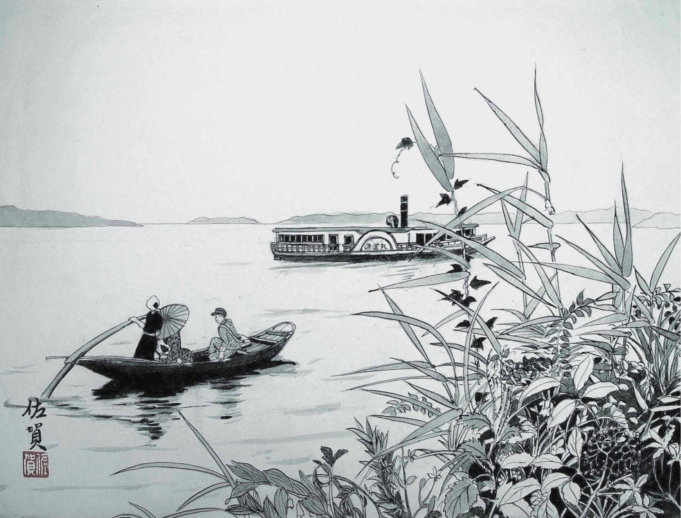
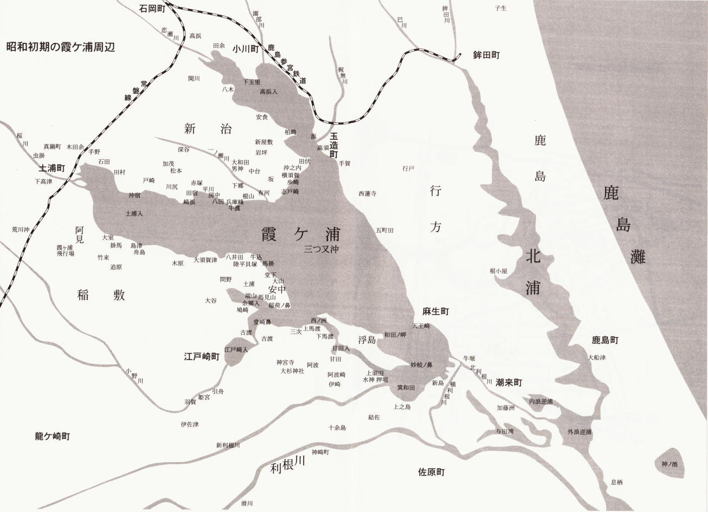
波の音が百万遍の念仏のように、腹の底で揺れている。苫屋根の陰から顔を出して辺りを見ると、湖の上は真暗で、空も水も区別がつかない。風が冷たい。枯れ葦の葉ずれの音が、凍った闇の空気に震えている。掻巻きに首を埋めて目をつぶると、念仏の声が、耳の底に響いてくる。その声はいつの間にか、遠い昔に聞いた升量りの声に変っている。
ひとひとひと、ふたふたふた、みよみよみよ、よつよつよつ、いついついつ......
「あれはなに、おっかさん」
「わかさぎを量ってるんだよ」
「わかさぎってなんなの？」
「この湖でとれる小さい魚だ。漁師が網を曳いて捕って来たのを、魚問やが升で量るのさ。漁師が魚を大ザルに山盛りいっぱいとって来るだろう。それを問やのおかみさんが手づかみで升に移して、ひとひとひと、ふたふたふたって数えるんだよ」
「おっかさん、見たことある？」
「あるともさ」
「なぜこんな真夜中にやるの」
「昼間じゃ魚も目が見えて、漁師がとろうと思っても逃げてしまうからだよ、夜なら網の目が寄って来ても、魚の目にも見えやしない。それでわかさぎ漁は闇の夜にやるんだよ」
おっかさんは、ころりと寝返りを打って背中を向ける。おとっつぁんの寝息が聞える。
「ひとひとひと、ふたふたふた......」、升量りの声はいつまでも続いている。漁師の荒々しい声が切れぎれに聞える。
冷たい風が吹いている。水と陸の境が薄ぼんんやりと青く見えて、その青黒い闇の中に、淡々しい白い帆が浮んでいる。ひとつ、ふたつ、みっつ、よっつ、白い花びらのような帆曳船が目の前の闇の中を、ゆっくりと風に乗って通り過ぎる。水鳥の鳴き交す声が風にのって聞えてくる。
波が船べりを洗っている。うとうとと眠くなる。波の音と枯葦の風にさやぐ音だけが、苫屋根の中へ這い込んでくる。
目を覚すと、苫屋根の入口から朝日が射していた。船の中には誰もいなかった。
渚の砂は、明るい日射しを浴びて、まぶしく光っていた。砂浜の向うから、船大工の釘を打つ音が聞えてきた。十二月初めの浜辺の空気が、釘の音に鋭く震えた。
「チョンチキ チョンチキ チャカチャカチャカ チャッカ チャカチャカ チョンチキチョンチキ チャカチャカチャカ......」
舳先に近い船張りの横の七輪に土鍋がのっている。七輪の火はとうに消えている。土鍋の中に二寸余りの鮒が三匹、てんでの方角に頭を向けて横たわっている。藁束の傍に鍋がある。鍋の底に麦飯がちょうどご飯茶碗一杯分残してある。りつ子は船べりから手を伸ばして顔を洗った。すき通った水の中に自分の顔が見えた。髪の毛に藁屑がついていた。
渚伝いの街道に、大きな綿入れ半纏を着た遊び人風の男が、寝呆けた顔をして突っ立っていた。その男は漁師村の者には珍しく、草履に足袋を履いていた。男は空を仰いで大あくびをした。
家の立ち並んでいる西の街道の方角から手拭を頬被りにして、膝から下はむき出しの百姓風の老人が、荷車をひいて近づいてきた。街道の上に高い松の木がかぶさっている。
「おう、早えなあ、じいさん」
綿入れ半纏の男はぼさぼさの頭を爪を立てて二、三度掻きながら上機嫌な声で言った。
「もう、はあ一仕事終したのか」
「なあに、いつものことだ。それよりか長太郎さんの方がこうた時間に目え覚ますなんざ珍しいじゃねえか、何かいいことでもあんのかね」
「大ありよ、で、これからまたどっかさ行ぐのかい」
「田伏だ」
「田伏のどごさ行ぐんだ」
「岡部鍛冶やだ。さきかけ頼んどいた鍬を三丁ばかし取りに行ぐだよ」
「それぐれえなら、なにも荷車は用はねえべ」
「なに、帰りに服部の新店さ寄って、〆粕一俵買って来ねばなんねえ。それに叺も小一郎の家から取って来ねばなんねえがんなあ」
荷車が砂浜の中の道を遠ざかっていった。綿入れ半纏の男は、懐から手拭を一本引っぱり出すと、右肩にひっかけ、肩をゆすって、りつ子がのっている小舟の方へ歩いて来た。足元が酔払っているようにふらふらしていた。
「見なれねえ船だな。どっから来たんだ」
男は、砂浜に押しあげてある舳先に手をかけると、無遠慮に中をのぞき込んだ。
「おめ、ひとりか？」
「ううん」
「おとっつぁんらは出かけたのか」
りつ子は男の顔を見据えながら、黙ってうなずいた。
「土浦のもんか、それとも佐原あたりか？」
「東京」
「へへえ、東京は深川か、......そう妙な目つきで見るもんじゃねえ。別におめえの身上調べをするつもりはねえよ。こちとらも、警察なんてところとは、生涯つき合わねえで、おさらばしてみてえと思ってるぐれえだ。おめえはいくつになるんだ。十四ってとこだろう」
「十二」
「十二にゃとても見えねえ。おれはな、あの松の木の下の家に住んでる桂庵の長太郎ってんだ。おめえのおとっつあんはどこさ行ったんだ」
「働きに行った」
「そいつぁ手回しがいいな」
「早船の久蔵さんという人が以前から知っているから、そこへ行くって昨日言ってました」
「久蔵の奴は病気で寝込んでるぜ」
長太郎は砂の上に尻をつき、草履と足袋を脱いで裸足になると、立ち上がって綿入れを脱ぎ、水辺まで歩いていった。透明な水が長太郎のくるぶしまでずぶりと浸した。
「ふうう、酒の気がすっかり脱けちまあ、まるで氷みてえだ」
長太郎は腰を屈め、澄明な水を両手で掬うと、ぶるぶると音をたてて顔を洗った。
「漁師の野郎ら、水の上に住まっていやがるというのに、ひと月にいっぺんも顔を洗いやがらねえ、ほんとのことだぜ、汚ねえ奴らだ」
長太郎は水のしたたる顔をちらりとりつ子の方へ見せ、はいつくばって口を水につけると、三、四度口をすすいだ。それが終ると、長太郎はゆっくりと立ち上り、綿入れの下の紺と浅葱の弁慶縞の着物の裾をまくって小便を垂れた。小便はすき通った水の表面に、大小の濁った泡を幾十と作ったが、それもほんのつかの間のことで、波が渚を二、三度洗うと、濁った泡は跡形もなく消えてしまった。
長太郎は、はればれとした顔を、りつ子の方へ向けた。
「おめえはこの村は初めてか」
「小さい時に来たことがあるそうだけど覚えてません」
「東京じゃおめえのおとっつぁんは何をやってるんだ」
「小名木川で荷を運んでいるんです。肥料だの油だの、お米だの、いろんなもの」
「ここにゃいつまでいる」
「分りません」
「分かりません？ さすがに東京の子どもは、船頭風情でも言葉がちがあ。そんな船ん中にいねえで外へ出てみろ、いい天気だぜ」
男は背伸びをし、分厚い唇を歪めて笑った。
「なにもおめえを取って食うほど、おれはしけちゃいねえよ。黙っていても金はちゃんと入って来るというけっこうなご身分なんだ。村の奴らあな、働くより能がねえのがぞっくりそろってるが、おれだけは別さ。東京へはちょくちょく行くし、漁師だの百姓らよりは、おめらの暮しは知ってるつもりだ。ついて来な。飯も食わしてやらあ」
長太郎は言い終ると足袋を拾って懐へ押し込み、綿入れに袖を通し草履をつっかけて歩き出した。りつ子が黙っていると、長太郎は五、六歩向うへ行ってから立ち止ってこちらを見、にやっと笑ったが、それきり何も言わず、船大工の仕事場の方へ行ってしまった。
りつ子は舳先の上に立ち上って、長太郎の後ろ姿を眺めていた。肩をゆすって歩く姿がふらふらして、糸の切れた凧のように見えた。濃い藍色の綿入れが朝日に映えて、とても美しかった。
りつ子は船底の草履を砂の上にほうり出すと、ポンとその上に飛び降りた。
長太郎はゆっくりと砂を踏んで、船大工の方へ歩いて行った。船大工はねじり鉢巻姿で、船釘を調子良く打ち込んでいた。
チョンチキチョンチキ チャカチャカチャカ......、船大工の顔は膠のように褐色だった。三十とも思えたし、四十を過ぎているようにも見えるのだった。小さな小屋の周りに、杉や松板が背の高さほどにきちんと積んであった。崩れかけた七輪の中で、木屑がちょろちょろと燃えていた。
「精が出るじゃあねえか」
長太郎は炎の方へ手を伸ばした。
「いい音だな」
長太郎は尻をまくって股ぐらをあぶった。
船大工は、ひどく怒ったような顔をして、長太郎を見た。それから、長太郎の二間ばかり後ろに立っているりつ子の顔を、眉を寄せて不快そうに眺めた。金槌の音が止まると、辺りは恐ろしいほど深閑として、耳がじいんと痛くなるようだった。
「この人はな、菅沢達三といって、霞ヶ浦じゃ一番の船大工だ」
長太郎は、りつ子にこっちへ来いという風に、炎に手をかざしながら手招きした。達三は軽蔑したような薄笑いを口辺に浮べ、再び船釘を打ち込みはじめた。
薄い木綿の筒袖の下に、筋肉がびっしりと盛り上がり、それが一分の無駄もなく律動的に動くのだった。船と大工は完全に一つのものになりきっていた。
長太郎は尻をあぶり終えると、くるりと向きをかえて、前の方を炎に曝した。炎の色がとても温かそうだった。長太郎は目をつぶって、気持よさそうに首をふらふらと振っていた。都々逸か小唄でも、口の中で歌っているのかもしれなかった。風が吹いて、りつ子は急に空腹を感じた。
小屋の中からぼさぼさ頭の、色の黒い女が出て来た。女は右手にやかんを下げていた。女はひどく痩せていたが、両の眼だけはとりたての魚のように少し出眼かげんで、きらきらと光っていた。
「長太郎さん、ばかに早いね」
女は七輪の上にやかんを乱暴にのせた。ぱちぱちと火の粉が爆ぜた。
「何か用け？」
女は不機嫌に言った。無地の単衣物に、子どもの締めるような赤い帯を締め、草履もはかない両足の脛は、かさかさに白く乾いて、右足の親指の爪の間に血がにじんでいた。
「なんだい、不景気な面あして、夫婦喧嘩でもやっつけたのかい」
長太郎はからかうように言った。
「喧嘩もするさ。しないでいられるかよ」
女は青い顔をひきつらせて長太郎を見た。風が吹いて、女の髮がそそけ立った。
「またなんで、こんな天気のいい日に喧嘩なんぞやったんだ。雨が降るぞ」
「雨でも雪でも降りゃいいんだ。漁師らつうのは、ほんとに半泥棒だよ。この人が人がいいばっかしだから、だまされてばかしいるんだ。おらたちゃ漁師に殺されちまうよ」
女はぎらぎらした眼でりつ子を見た。
「この娘は何だね」
「いやあ、何でもねえ。苫かぶり(小舟に苫屋根をかぶせ、川を渡り歩いている放浪生活者を指す)さ。そんで何か、お邦さん、喧嘩のもとってのは、つまりまた船の代金がもらえねえつうのか」
「んだよ。船大工がどれほど苦労して材木集べて船こさえてんのか、漁師らだって知ってっぺ。知ってて、船ぶたせて(造らせて)半金も払あねえつうんだから、正真正銘の泥棒だっぺ。ああ、長太郎さん、そう思うベ。思うベ......。誰だって霞食って生きてぐわけにゃいかねえんだ。
この船だって、麻生の浜田からどうしてもって頼まれてんだが、ほんとに払ってくれんのかどうか分りゃしねえよ。そんでもこの人は、こさえてくれろって来られれば、よしきた、こさえべって答えるばかしで、内金をもらあとか、材料はそろえて来いとか、金物は土浦で買って来るからその金を出せとか、そうたことひとことも言わねえんだ。
ろくな金もねえ漁師に、金もってこいといえねえべと、こう言うんだよ。そんで、引受けて、一切合切こっちが揃える。去年の秋なんぞ長太郎さんも知ってんべが、玉里の大井戸から松材を買って、そいつをいかだに組んで持って来ようとしたのはいいが、急に風が出て五町田の方さ流されちまって、すんでのとこで死ぬとこだった。
そうた苦労して木い集べて、材木の仲買いには頭下げて待ってもらって、他の小物はちゃんちゃんと町から買って来てよ、根切りさん(樵)には手間を払う、製材屋にもきちんと金を払ってよ、そんで船ぶってやって金もらえねえつうんだから、暮しが立ちいくはずはあんめえよ。
そんで昨日、とうとう米櫃に米が一升もなくなっちまったもんだから、この人に相談したれば、有賀の又右衛門のとこにゃ昨年の秋に帆曳船造ってやって、まだ米一駄分の貸しがあっから取ってこう、もしくんなかったれば、根山の惣一のところにも二駄(馬の背には左右に一俵ずつつける。二駄は四俵。出島では駄をだんと言う)分の貸しがあっからもらってこうっていうんで、おら、朝日が上んねえうちに荷車ひいて又右衛門のとこさ行った。そしたれば、又右衛門は、ごだひき漁に出っちまっていねえんだ。
そんで、女房のたみさんに話したれば、おら、そんなことしんねえつう。しんねえたって、船ぶってやったことは確かなことで、女房のおめえがしんねえわけがねえべ、米を一駄とはいわねえ、一俵でも二斗でもくんねえかって、こう言ったれば、たみは目え釣り上げて、ねえものはねえ、おらのうちじゃ米喰い虫ばかしいてどうにもなんねえんだってどなり回すんだ。
鼻垂らした子どもらは泣ぐし、赤ん坊が背中にぶらさがってるしよ、おらはそれ以上何も言えなくなっちまって、しゃあねえから、根山の惣一のとこさ行った。そしたれば、惣一は、やっぱしいねえで、女房のはるが、問やさ行ったつうんだ。そんで、おらは荷車そのまま置いて問やさ行った」
「大崎やか」
「そでねえ、山源だ。おらが入っていったれば、土間でばったり惣一の野郎に出くわしたんだ。で、おら、米二駄分、返してくれろって言ってやった。まさか他の漁師が大勢居っとこで、知んねえふりもできめえと思ったかんなあ。
そしたれば惣一は、懐から巾着出して、手のひらの上に四十銭並べやがって、おらが今朝方、漁やって売った金が四十銭だ。したが、この四十銭のうち二十銭は天神(質屋の屋号)さ払わなけりゃなんねえ。天神さに蒲団を質草に入れちまって、このひと月の間つうもの、五人が二つの蒲団にくるまって寝てたつうんだ。
そんで、銭子二十銭のうち十銭は米代に要っから、十銭で我慢してくれ。十日二十日のうちにきっと払あからつうんで、おら十銭もらあべと思ったが、惣一の野郎の顔があんまし痩せちまってるもんで、つい弱気んなっちまって、五銭だけもらって帰って来た。
したが、五銭ぐれえの金でどうなるわけでもあんめえよ、まったく。おらあたちは、漁師に食われて、死んちまあだよ」
女はしゃべっているうちに、情けなくなってきたのか、急に顔を真っ赤にして、涙をぽとぽととこぼした。
「おれが金をとり立ててやるかね」
長太郎は股の間に着物の裾をはさみ込み、七輪の前にしゃがみ込んで煙管を取り出した。
「惣一と又右衛門の借金を俺が達三さんに払ってやって、その分を俺が二人から取り立てる、そうすりゃ船は安心して造れる。むろん、お邦さんが、有賀だの浜の方まで金取り立てに行ぐこともねえんだ。それでいいんなら、今、この場で金を払ってやるぜ」
長太郎は煙草をうまそうに吸った。お邦は口をへの字に結んで、黙って突っ立っていた。
「俺にまかせるかね。今日の米もねえんじゃあ、どうにもなるめえ」
長太郎は言ってお邦に、達三に承諾させろ、という風に顎をしゃくった。
「どうすんだ。長太郎さんに頼むのか」
お邦は、ぶすっとした声で達三に言った。達三は金槌を二、三度力いっぱいふるってから、急にその手を止めてこっちを見た。
「船大工が桂庵さ金の取り立てを頼むようになったればしめえだよ」
と、達三は金槌を砂の上に立てて、しゃがんだまま低い声で言った。
「そうかね。だが、このままじゃあ仕事は続かめえ、それでもいいのかい」
「かまやしねえ。そうたこと、おめえが心配してくれるこったねえ。それに、今ぶってる船は浜田のもんだ。あの男はちゃんと払う。払ってくれるともさ。なあに、子どもがいるわけじゃなし、夫婦二つの口ぐれえ、何とかならあ」
達三は再び金槌を振り上げて、釘を打ちはじめた。
チョンチキ、チョンチキ、調子のよい音が、広い砂浜いっぱいに響き渡った。
長太郎は白い息を吐きながら、ゆったりと立ち上った。お邦は何か言いたげに口をぴくぴくと動かしたが、とうとう何も言わなかった。達三は二度と振り返らなかった。
りつ子は一間ばかり後ろから、肩をすぼめて長太郎の砂の足跡を踏んで歩いた。十間ばかり行って振り返ると、達三の女房のお邦が、七輪の傍にしゃがみ込んで小さくなっていた。
「おらあなあ、達三の釘しめの音を聞くと、いつもよしきりを思い出すんだ」
と、長太郎がりつ子を見て言った。
「クツカタ、クツカタ、クツカタカタ、ナンノソノ、サア切れ、サア切れ、サアサア切れ切れ......」
「なんのこと、それ」
りつ子は、酒焼けした長太郎の顔を、首を傾げて見上げた。
「よしきりってのはな、いつもこう言って鳴いてるんだ。クツカタクツカタってな」
よしきりは怨念鳥だ、という話を俺がじいさまから聞いたのは、まだ子どもの時分だったから、もう三十年も前のことだな、と長太郎は言った。
昔、ある殿様の別当が、殿様の沓をなくしてしまった。それで、首を斬られることになり、刑場へ曳き出されたのだが、首を斬られたとたん、別当はよしきりになって飛び立ち、傍の葦にとまっ て、〝クツカタ、クツカタ、クツカタカタ、ナンノソノ、サア切れ、サア切れ、サアサア切れ切れ ......〟と悲しげに鳴いた。
それ以来、よしきりは、別当の怨を胸にひめて鳴いている怨念鳥だ、と呼ばれるようになった。その国では、葦が伸びる頃になると、よしきりの群が辺りの空気を切り裂いて、悲しげに鳴き叫ぶのだと言う。
「うまくたち回れば、達三は倉の一つや二つ建てる腕は持っているものを、船を造ることのほかは、何にも考えねえんだから、腹も減ってくるさ。それで、釘しめの音が、だんだん怨念鳥の鳴き声に似てくるんだ。働くより能がねえ男ってのは仕方のねえもんよ」
長太郎は砂地の中の道を、両の手を着物の袖へひっこめて、相変らず肩を振って歩いた。
道の右側は松山になっていた。頂上に近い松の木は、恐ろしいほどの大木で、一本一本の松の葉が、日の光に美しくきらきらと光っていた。
大きな酒屋の前で、小僧が水を撒いていた。「江口屋」という看板がかかっていた。
「よく働くな。御神酒を一升くれねえか」
長太郎は、ひしゃくを持っている小僧に声をかけた。りつ子と同じ年ぐらいの、頬の赤い少年は、 驚いたような目でりつ子を見た。
「お神酒ですか？」
「そうだ」
「どっかにお祭りでもあるんですか」
「祭りなんぞねえよ。ちょっとこの上の観音様のご機嫌を伺って来てえと思ってな。悪いかい」
「いいえ」
小僧は言いながら、また、りつ子をちらっと見た。
「志戸崎の観音様も、盆の十六日にゃ山が崩れちまあんじゃねえかと思うほど、参詣人が押し寄せるが、ふだんの日はさっぱりだ。んだから、人の多い時より、今日みてえな日におまいりしとくと、観音様もこっちの顔をよおく覚えてて、ご利益もあろうという寸法よ」
小僧が引っ込んで、番頭が出て来た。倉造という名の、色の黒い貧相な男である。
「上等の樽酒一本」
「へ、二円五十銭でございます」
番頭は言いながら、りつ子の姿を上から下までじろじろと眺めた。
長太郎は巾着の紐をほどくと、青札のまじった中から一円札を二枚と、十銭玉を五枚取り出し、番頭の手のひらにのせた。
「毎度ありがとうございます。周吉、お持ちしろ」
番頭に言いつけられて、小僧は水桶を敷居のすみに片付けると、樽酒を右手に下げた。
「この娘は、東北からでも買って来たんで？」
番頭が狡猾そうな眼を、ぎょろぎょろさせて言った。
「こりゃあ、東京から来た船頭の娘だ。三、四日はこの浜にいるんだろう」
長太郎は、ついて来いという風に、りつ子と周吉を促した。りつ子は振り返って、渚に舳先を上げている自分の船を見た。
青く光る波が、冷たそうに船べりを洗っていた。遙かな沖合に、白い帆を上げた高瀬船がぽつんと浮んでいた。
大きな白い帆と朝日に映える青い水が、いつか、どこかのお金持の玄関で見た絵そっくりだった。船がなかなか進まず、遠い行方のあたりが、緑の帯のように低く横たわっているので、いっそう絵のように見えるのだった。
江口屋の隣りは、間口三軒ばかりの藁屋根で、雨戸が一枚開いているきりになっていた。土間の中に日が射してるのが、いっそう家の中を暗くしていた。
長太郎がその家の前を通りすぎると、人気のなかった土間から、髪をひっつめに結った小肥りの女が、釜を右手に下げて大股で出て来た。女の姿はどこかしら崩れて下品な感じがしたが、顔はとても美しかった。女は長太郎と顔を合せて、何とも言い表し難いいやな目をした。
「バーカ」長太郎は懐手のまま、女に向って声を出さず、口を開いてそう言った。女も「阿呆」といいたげに、口をとがらしてそっぽを向いた。
「早く来んだら来う、おせい！ おいてっちまあぞ」
女は家の中へ向って叫んだ。五歳ぐらいの女の子が、土間の奥から転がるように出て来て、女の腰巻にしがみついて泣いた。女は釜を右手にぶら下げ、子どもを小脇に抱えると、水辺の方へずんずんと歩いていった。
女の出て来た家の横が坂道になっていた。長太郎は二、三歩上りかけたが、すぐ思い直して、さっさと家の立ち並んでいる方へ歩き出した。
「どこへ行くんです。観音様へは行かないんですか」
周吉が不審そうに言った。
「腹が減った。お前も腹の虫が鳴いてんだろう」
長太郎は、りつ子の顔を見た。りつ子は砂浜の女の方に目をやった。女は渚にしゃがみ込んで釜を洗っていた。女の子は泣きやんで、両手で水をすくっては砂の上にこぼしていた。
道の左手に砂浜が広がっていた。渚には漁船が幾艘も並んでいた。漁師が二、三人立ち話をしていた。真っ黒に日焼けした顔に敵意が浮んでいた。
「奴ら、ろくに漁がねえんで、いらいらしてやがんだ」
と、長太郎が言った。
わかさぎの漁期は、七月二十日から十二月の末までである。今は十二月の初めだから、もうすぐ禁漁期に入る。禁漁期になると、漁師たちは、りつ子の船と同じように、苫を切って、湖のそちこちを渡り歩いて、貝や小魚を捕って暮しをたてる。
禁漁期前でも十一月も半ばをすぎると、漁はめっきり少なくなるので、早々に帆曳をやめて、渡り漁に切りかえる者も少なくない。漁師たちは渡りに出る相談をしているのかもしれない。頸の筋肉が黒々と筋張って光っている。
「さっきの女の人、だれ？」
りつ子は周吉にそっと尋ねた。
「長太郎さんのおかみさんだ。二年前に、連れ子して嫁に入ったんだ」
と、周吉はほとんど聞えないぐらいの小さな声で囁いた。周吉のあたたかい息が耳元にかかって、りつ子は思わず顔をあからめた。周吉は樽を持っている手を右手から左手に持ちかえた。
長太郎は帆曳漁師の義郎の家の前を通った。
「義郎さんは出島で指折りの漁師なんだ」
と周吉が言った。周吉はりつ子が、身なりはみすぼらしいものの、言葉つきにいかにも都会の香りが漂っているし、漁師村には見られない容貌の美しさを備えているので、いっしょに歩いているのが得意のようでもあった。
しわだらけの年寄りが、義郎の家の横手の砂の上に蓆を敷いて竹籠を編んでいた。五つばかりの子どもが、じいさんの横で両足を投げ出して砂の上に絵を描いていた。健治というのだと周吉はいった。
健治がまんまるい目を上げて、長太郎とりつ子を交互にながめた。鼻汁が二本ぶら下っていた。
「とっつぁん、こうた寒いとこで何やってんだね」
長太郎はじいさんの前に腰を屈めると、竹棒を一本ひょいと持ち上げた。
「こうた竹、山でとって来たのか」
「んだ」
老人は手をとめて、頭をかいた。
「少しばかし煙草のみてえと思うだが、義郎が小遣いをくんねえんだ。そんで、おら鳥籠こさえて、台の方、山買いに歩いて小遣い作ってみべと思うだ」
山買いというのは、百姓の家から卵や鶏を買い歩き、買い取った品物を町へ持っていって、問屋にさばくことをなりわいとすることである。山買いを専門にしている男たちは、出島の東一帯だけで三、四人はいる。それぞれに縄張りがあるから、新規に始めるのは容易ではない。
「とっつぁんはもう、はあ年だから、山買いは無理だっぺな」
長太郎はしゃがみ込んで、老人のしわくちゃの手の甲や、腐りかけた木株のような両膝をしみじみと見た。
老人は若い頃、ずいぶんと腕の良い漁師で、喧嘩早いことでも有名だったが、この一、二年は急に年をとり、漁へ出ることはおろか網の手入れをすることさえ面倒になった様子だった。
長太郎は小さい頃、老人の船の中へ忍び込んで隠れんぼをしたり、帆布にくるまって寝込んでしまったりして、どなられた思い出は数限りなくあった。老人はその頃と比べると、二回りも萎んでしまったように見えた。
「とっつぁん、まあ、これで煙草買えや」
長太郎は巾着から一円札を取り出すと、老人の手のひらにぱらりと置いた。老人は手のひらを開いたまま、その金をじっとみつめていた。喜びとも驚愕ともつかぬ不思議な輝きが、老人の目や口の周りに浮んでいた。
長太郎は立ち上がった。
「じゃあ、またな」
老人は何か言った。長太郎は振り返りもせず、さっさと歩いた。
「このおじさん、お金持なんだねえ」
りつ子は周吉の耳に口をつけて囁いた。周吉はわざと長太郎から二間ばかり遅れて歩きながら、
「長太郎さんは、ひとやだもの。お金なんぞいくらだってあるさ」
と、両眼を怪しく輝かせて言った。
紺の刺子の着物を着た若い漁師が、家の前の砂地にエビダルを二束も広げて修理していた。しゅろ縄だの竹だのが、至るところに散乱していた。傍で若い女がしゅろ縄を編んでいる。
「なんだい、亀、もうエビダルの修理かい。わかさぎはもう、はあ、やめたのか」
亀と呼ばれた男は、ねむそうな眼を上げて長太郎を見た。若い女は知らんふりをして、しゅろ縄を編み続けた。
「わかさぎはもう、はあ、だめだ。一晩やって五升もとれねえ」
「去年は今頃もとれたっけなあ」
「去年でねえよ、おととしだ。おととしは、いかったっけなあ。禁漁なんのが惜しいほどとれたっけ」
「渡りさは行がねえのか」
「行ぐつもりだ。したが、どこでも大した漁は出来めえよ」
「みのわださ行ったらいいじゃねえか」
「行ぎてえのは山々だ。そだが、見張りが厳しいからなあ」
亀は、そんなことは考えてもいねえ、という風に頭を横に振ったが、その目は何か別のことを考えている風だった。
みのわだというのは、浮島の東にある広大な水面で、昔から霞ヶ浦随一の漁場として知られていた。深さはおよそ二メートルほど、底は一面の砂地で、水草がびっしりと生い茂っている。
みのわだの周辺には神落、押堀、新井などの村々があるが、この村の人々は夏になると、水草を柄の長い鎌で刈り取って、「もくとり船」に山ほどのせ、それを畑へ敷いて肥料にする。そして、秋から冬になると、水草の中にもぐり込んでいるうなぎや鮒や鯉を獲って生計を立てているのだ。
魚は一般に秋になると、「秋落ち」といって、霞ヶ浦から利根川の方へ下る習性を持っている。したがって、秋も終りになると、湖の入江などからは、魚影がめっきりと減ってしまうのだが、みのわだだけは例外で、秋から冬に網を入れても、船が沈むほど魚がとれる。
鯉や鮒はいうに及ばず、本来は海へ下ってしまうはずのうなぎまでが、一網で幾十本も入る。したがって、この漁場の操業権を持つということは、漁師としての生活を保証されたようなものであるから、入会権もなかなか厳しい。
浮島からみのわだ沿岸の村々の者と、対岸の麻生の漁師は、その権利を持っているが、はるか遠い出島の漁師たちは、ここでの漁業は許されていない。
「おめえは、二度ばかり押堀の漁師にとっつかまったからな。またあのうき目はみたくねえんだっぺよ」
長太郎は袖をひらひらさせながら溥く笑った。亀は唇をかみしめて、憎々しげに長太郎を見た。漁師でもねえものが、へらず口を叩いてやがる。そんな気持が亀の眉間に浮んでいた。
裏手から子どもの喚声が響いて来た。十人余りの子どもらが、ばらばらっと走って来た。一番後ろから追って来たのは、頭を茶せん髷のように結って、ワラシベで結んだ七つばかりの男の子だった。男の子は竹の棒をぐるぐる振り回して、泣きながら前の子どもたちを追いかけていた。砂浜に赤や黒や黄色の綿入れ半纏が、喚声といっしょにちらばっていった。
長太郎は、あいさつもせずに、亀の前を離れた。亀太郎の次が藤井薪問や。藤井さんは漁もやっている。とても腕がいいよ、と周吉はりつ子に説明した。荷馬車が一台、店の前に停っていた。手間取りの女が二人、荷馬車から薪を下ろしていた。
「小名木川には、薪を積んだ高瀬船が毎日幾艘も通るよ」
と、りつ子が言った。
「小名木川ってのは、東京か」
と、周吉が言った。りつ子は笑った。
「隅田川と江戸川と中川をつないでいる川だよ。両側ともびっしり倉庫や工場があって、魚だの砂利、石炭、米、薪なんぞを積んだ船が、ひっきりなしに通るんだよ」
周吉は目を細めた。倉庫が幾十、幾百も立ち並ぶ町が周吉の目にまざまざと浮んだ。りつ子がそんなところから来たのだと思うと、周吉はいろんなことを聞きたくて、体がむずむずした。
「浅草ってとこさ、いったことあっか？」
「あるよ」
「観音様ってのは大かいのか」
「大きいお寺だよ。まわりは、ぎっしりのお店でね。歩くのもようやっとっていうぐらいなんだもの」
周吉はため息をついた。薪屋の隣りの家は、堅く戸が閉っていた。
「ここはさわやっていうんだ。帆曳漁師だけども、十日ぐらい前から渡りに出ちまった」
渡りに一度出ると、ひと月もふた月も帰って来ない。閉った雨戸の前に、赤い鼻緒の草履が片方、犬に食いちぎられてころがっている。
さわやの隣りは細い露路になっていて、その向うが塗師やの中泉である。じいさんが店の板の間に、木の椀だのしゃもじ、箱なぞをいっぱいに並べて、うるしを塗っている。周吉とりつ子が店の前に立つと、じいさんは厳しい目つきで、二人を上目使いに睨みつけた。
「ここのじいさんは、子どもが嫌いなんだよ。店先で子どもらが騷ぐと、おめえらの口、にかわで上と下、くっつけちまあど！ ってどなるんだよ」
周吉は手に下げた樽を振り子のようにぶらぶらさせた。
馬掛やは塗師やの向いの二階やで、窓に欄干があった。屋根は茅葺きで、北側の軒先に枯草が生えていた。
長太郎はのれんをかき分けて、さっさと中へ入った。
「この店には酌婦が五人もいる。みんな長太郎さんが連れて来たんだ」
馬掛やの後ろはすぐ湖になっていた。長い桟橋が沖の方へ突き出していた。
りつ子が周吉のあとから恐る恐る中へ入ると、長太郎は土間の真ん中の囲炉裏の傍に腰を下ろしていた。漁師が一人、ところどころ綿のはみ出したどてらを着て飯を食っていた。なめし皮のような赤銅色の顔に、無精髭が一寸余りも生え、膝から下むき出しになった足が、栗の木の根のようにごつごつと乾いていた。
長太郎は帯の間から煙管をひきぬくと、囲炉裏火で火をつけてぷうっと吹かした。
「こっちさ来い」
と、長太郎は口から煙を吐き出しながら言った。
「お酒はここへ置いていきます」
周吉は一升入りの樽を卓の上に置いた。
「手を出せ」
長太郎は周吉の手のひらに五銭玉を一つのせてやった。周吉は五銭玉を握りしめて、りつ子に向ってにこりとした。
「毎度ありがとうございます」
周吉は大急ぎで土間を出て、入口で腰を二つに折っておじぎをした。長太郎はりつ子にも、
「ほれ、手え出せ」
と言って、五銭玉を握らせた。りつ子はびっくりして、掌の上の五銭玉に長い間みとれていた。
「長太郎さん、あんまし子どもを甘やかすとろくなことないよ」
髮を潰し島田に結った女が、りつ子をじろじろと見ながら、下駄をつっかけて近づいて来た。
「酒樽を運んで来たぐらいで五銭だなんて、金の値打ちが下がっちまうよ」
女はりつ子を憎々しげにみつめた。
「いいじゃあねえか。おめえの金じゃあるめえし」
「ちっともよかないよ。長太郎さんがいくら金回りがいいからたって、他の者の手前ってものもあるからね。弥一郎さんが今朝持って来た鯉だって、二尺以上のものが一本四銭だよ。それを、こんな子どもに五銭やるだなんて、長太郎さんも気前がよすぎるよ」
「この女がな、馬掛やのおかみさんだ。お熊さんという名前だ。いい名だろう、ハハハ。ところで、おめえの名前はなんだっけな」
「結城りつ子です」
「なあ、みろ、ちょっと言葉がここらあたりの娘とはちがあだろう」
長太郎は煙管をくわえながら、赤い眼をちょっと細めて腕組みした。
「どっから連れて来たんだい？まだ子どもじゃないか」
お熊はりつ子の体を点検し終えると、とげのある声で言った。
「こんな娘じゃ、とても客扱いは出来やしまいに。三、四年は地走りにしか使えないよ」
「なに言ってんだい。俺はおめえんとこに連れて来たんじゃあねえぜ」
「そんじゃ、どっか他の店へ連れて行くつもりなのか」
「そうじゃあねえ。こりゃあ苫かぶりの娘なんだ。小名木川の船頭をやってるんだとさ。何の用で来たのかは知らねえが、船飛脚の久蔵と知り合いで、昨日来たってんだ」
「へえ、久蔵はリュウマチで寝てんだろう」
「そうだってこったなあ。それで、この娘のおとっつぁんが、手伝いに来たのかもしれねえが、まあ、そんなことあどうでもいいや。飯食わせてやってくれ。
茶漬けでもなんでもかまわねえ。おれには銚子を二本と、金平牛蒡でも出してくれねえか。熱燗じゃなけりゃだめだぜ」
りつ子は空っ腹を抱えて台所の包丁の音を聞きながら、囲炉裏の向う側にいるどてらの男が妙に気になっていた。
最初見た時、男は五十をよほど過ぎているように見えた。しかし目が家の中の明りになれてみると、赤銅色の男の顔は、ひどく若々しいのだった。髭が生えているからよく分らないが、三十二、三にも見えたし、二十五、六のようにも見えるのだった。
男はたくあんと貝の煮つけの入った小皿を囲炉裏の縁にのせて、黙々と飯を食べていた。長太郎やりつ子が入ってきても、一度ちらりとこちらを向いたきりで、それきり目をこちらに向けようとしなかった。
男は、どんぶりめしを見るまに三杯平らげ、やかんの湯をどんぶりに七分目も注ぐと、その中へたくあんのかけらを沈めて、ふうふうと湯を吹いてから、一息にその湯を呑み干した。
目尻に目脂がこびりつき、耳の周りは垢で真っ黒だった。しかし、そんな容貌にもかかわらず、どうしたわけか、ちっとも不潔な感じがしないのだった。それはきっと、その男の、どてらにくるんだぶ厚い胸と、隆々と左右に張った肩のせいかもしれなかった。
男はもう一杯湯をどんぶりに半分ほど注ぐと、その湯でごぼごぼと口をゆすぎ、その湯をごくりと飲んでから、
「おかみさん、いくらだね」
と、案外優しい声で言った。
「五銭でいいょ」
お熊が台所から大声でどなった。男は懐から長い袋になった財布を取り出し、五銭玉を拾い出して卓の上に置いた。
「ごっつぉうさんでした」
「またいい魚があったら持ってきておくれよね」
お熊が台所から首を半分出した。
「ああ、また来る」
男は裏口から桟橋の方へ歩み去った。
「あの男はな、このすぐ西に住んでる弥一郎てんだ」
若い女が銚子と金平牛蒡と、ごはんとみそ汁を盆にのせて運んできた。
「弥一郎は何本持って来たんだ？」
長太郎は若い女を見上げた。
「十五本」
「十五本、大した腕だ」
「一番大きいのは三尺以上もあるのよ」
「へえ、おだ荒しも、あそこまでいくと、なかなかのもんだな」
長太郎は笑った。
「さあ、食えよ。馬掛やの飯は、ここらあたりじゃ一番だぞ」
遠くで蒸気船の汽笛の音がした。りつ子は蒸気船の汽笛を聞きながら、しみじみと飯を食べた。しょう油の味の浸み込んだ貝が固くて、いつまでたっても飲み込めなかった。
「おだ荒しって、なんなのかなあ」
りつ子は固い貝の味をかみしめながら、さっき出ていった弥一郎という男の姿を思い出していた。この真冬に、鯉をどんな風にして獲るのか見てみたい気がした。長太郎は若い女に酌をさせながら、製糸工場の話をしていた。
「中村の女工たちは、夜んなると若い漁師を宿舎にひっぱり込んでんだからね。こっちの商売が上がったりんなっちまうよ」
若い女は、ちょっと怒ったように、目を釣り上げた。長太郎は、ハハハと笑って、女の頬を右の指でつまんだ。
戸口の向うに見える湖の色が、冬の日に光って青い氷のようだった。あんな青い水の上で、どうやって魚を獲るのだろう。りつ子は、大きなごはんのかたまりをごくんと飲み込んだ。櫓をかけた船が、桟橋の向うを一直線に北の方へ走っていった。金属のように固く見える湖の表面が、かみそりのようにすすっと切り裂かれるのが気持良かった。
「もう一杯食べる？」
そう言って、りつ子の顔をのぞき込んだ若い女の眼が、やはり、ひどく冷たい水の色だった。
蒸気船の汽笛がのんびりと聞えて、背のびをすると、戸口の彼方に、丸い形をした通運丸が、かたつむりのように動いているのが小さく見えた。
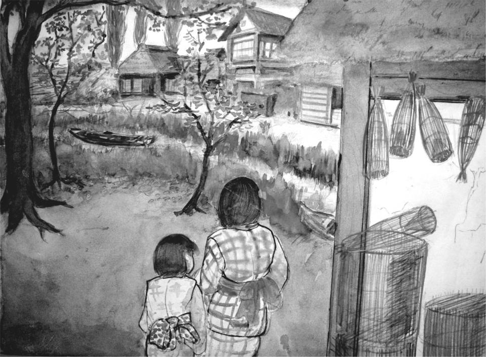
朝から雨が降っていた。西風が激しく吹きつけて、茅葺きの苫屋根がびよびよと悲しげに鳴った。入口にぶら下げてある蓆が風に吹かれて、中へまくれ込んできた。子どもの頭ほどの石を二つ重しにして、蓆の下を押えつけたのだが、風は蓆の目を吹き抜けてくるので、船の中はひどく寒かった。
父親の升吉は、とっくに出かけていた。こんな風の日に飛脚船が出るはずはないのに、と思うのだけれども、やっぱり、毎日来るからという約束で久蔵のところに雇われたのだから、休むわけにはいかないのだった。
「顔だけ出してくるからな」
升吉はそう言って、朝飯を食うとすぐに出ていった。
飛脚船は早船とも呼ばれていて、どこの村でも一艘や二艘持っていた。志戸崎では貝塚久蔵、八田では小島、牛渡の浜では、中村の新宅でシバラのヨシさんが船飛脚をやっていた。
船飛脚は持船に、客や荷物を乗せて村と土浦の間を往復する。村の人間は百姓でも漁師でも、町へ買い物に行っている暇がない。それで船飛脚の船頭は、村人の注文を受けて、日用雑貨の買い物なども引受けるのだ。
毎日、夕方になると、船飛脚の船頭は村の中を荷車をひいて、鐘を鳴らしながら一廻りする。鐘の音を聞くと、村の人々は家からとび出して、石鹸を一箱とか、砂糖を一袋、金槌を一丁、釘を百本、砥石を二丁という風に、それぞれ銭を添えて注文する。中には船頭の家に注文を直かにいくものもいる。
船頭は注文を帳面に書きつけて銭を預かり、土浦で買い物をして、村に運んで来て注文主に渡してやる。志戸崎から土浦まで、湖岸べりを歩くと六里である。往復十二里。もし歩いて買い物に行くと、一日で往復するのは容易でない。ところが、船飛脚に頼めば、自分は他の仕事をしていて、品物はちゃあんととどけてくれるのだから、村の人間にとって、船飛脚はなくてはならぬ存在なのだ。
貝塚久蔵は昔から志戸崎の船飛脚だが、去年の暮から持病のリュウマチが悪化して、船が漕げなくなった。りつ子は、おとっつぁんが久蔵とどんなつながりがあって、こんなところまで手伝いに来たのか、その理由は知らないけれども、どうやら春過ぎまで働くつもりらしい。
母親のうめは、七輪に土鍋をかけて粥を作っている。煤けた苫屋根の下にしゃがみ込んで、七輪と土鍋の間からもれてくる淡い光をぼんやりみつめている姿を見ると、りつ子は、いつの間におっかさんはこんなに年をとってしまったのだろうと、恐ろしくなる。
「今日は高瀬船は入らないだろうねえ」
りつ子は、小さい声で、おっかさんに声をかけた。風が船をゆすっていた。
「来るまいねえ」
おっかさんは膝を両手で抱えて、薄い火に視線を注いだまま、ぽっつりと答えた。
「小名木川にいた方がよかったね。雨の日だって倉庫の仕事があったし、いろんな人が遊びに来たし、石炭屋の人夫の小屋に行くと、男の人らが山のようになって博奕うって、とってもにぎやかだったもの」
でもりつ子は嫌な思い出をいつも思い出しておっかさんと同じ気持ちにはなれなかった。それはある雨の日、りつ子のおとっつぁんは自分の船で博打場を開いた時の事だった。玄人のやくざは呼ばず、船乗りの一人が壺を振った。そして昼が過ぎてみんな興奮して顔を真っ赤にして賭場に食い入るようにのめり込んでいた時、いきなり巡査が七、八人もとび込んできた。人夫たちは、あっという間もなくつかまったけれど、おとっつぁんは船端から小名木川へ飛び込んだ。そして一時間ぐらい船底に隠れていたらしいけれど、寒さに我慢できなくて降参して、船端につかまってのぼってきた。巡査が手錠をかけて、ひどい言葉を浴びせてひっぱって行った。
りつ子は、おっかさんに連れられて、留置場へおとっつぁんをもらい下げに行った。巡査が三、四人いた。
「こんないい女房子どもがいるというのに、さいころなんぞを転がしていると、いまに子どもを売り飛ばすことになっちまうぞ」
目の鋭い、鷹のような頬をした中年の巡査が、妙にやさしい声でおとっつぁんに言った。コンクリートの部屋の真ん中に大きな火鉢が置いてあって、薪がいきおいよく音をたてて、四方に火の粉を飛びちらしていた。
おっかさんが胃をこわしたのも、おとっつぁんが博奕に手を出してからだ。小名木川から、こんな田舎の浜に移って来たのも、ほんとうは、向うに仕事がなくなったからではなくて、おっかさんが博奕仲間の人夫たちのいるところから離れたかったのかもしれない。
「おっかさんは、何を考えているのだろう」
りつ子は、粥が煮えるのを、ぼんやりと待っている母親の顔をつくづくと眺めた。母親の顔は不透明な灰色で、眼が死んだ魚のように動かなかった。波が船端をゆすっていた。
雨の音を聞いていると、まぶたがひとりでに落ちてきた。
「陸に上がって、動かない家に住みたいね」
「そのうちな、そのうちそうなる」
りつ子は夢現に父と母のやりとりを聞いていた。こんな会話を、りつ子は幾度となく聞いた。
「雨がやみそうだな」
おっかさんが言った。おっかさんは、土鍋のふたをとって中をのぞき込んでいた。りつ子は蓆を少し開けて、浜の方を眺めた。冷たい雨が砂浜に音もなく吸い込まれていた。松の木の緑が、灰色の村々をいっそう寒々と見せていた。
しょうゆの樽が空になっていた。りつ子は、しょうゆ樽を下げて表へ出た。江口屋の前を通ると、周吉が前掛に両手をくるんで表へ出て来た。
「なんだい、それ」
周吉はりつ子の持っているこうもり傘を珍しそうに眺めた。
「なにって、こうもりよ」
「こうもり？ からかさだな」
「からかさじゃないよ、こうもりだよ。布で出来てるんだもの。知らないの」
「ちょっと持たせてみろ」
周吉は目を輝かせて、りつ子からこうもりを受け取った。
「こうたもの、地主の旦那だって、持ってねえなあ。どこで買ったんだ」
「東京だったらどこだって売ってるよ。周吉さんは雨の日、からかさをさすの？」
りつ子は、しょうゆの空樽を地面に置いた。
「からかさなんどささねえよ」
「じゃどうするの。ぬれちゃうじゃない」
「蓑着て行ぐんだ。ここらあたりのものは、みんな蓑笠で歩くんだぞ」
「どこへ行くときも？」
「そうさ。かさなんぞ持ってたら手がふさがってて物が持てねえ。それに風が吹いたらすぐに茸になっちまう。配達を頼まれたら、一升の酒でも届けなけりゃなんねえからな。雨の日は蓑の方が便利なんだ」
「遠くまで行くの？」
「行ぐよ。二里三里離れたところでも注文されれば届けんだよ。背中さしょって、大和田だって、戸崎までだって行ぐよ」
「注文したんなら、自分で持っていきゃいいじゃないの」
「注文は自分じゃしねえもの。馬車曳きだの、蒸気船の船乗りに言ってよこすんだ」
「たいへんなんだねえ」
りつ子は、きらきら光る目で周吉を見た。
「今日はどこさ行ぐんだね」
「しょうゆや」
「どこにあんのか知ってんのか」
「知ってる、昨日ちゃんと見といたもの」
りつ子がさよならと言って歩き出すと、周吉はいっしょに行きたそうなそぶりで敷居の前に立っ ていたが、やっぱり店番は店を離れられないのか、いつまでも軒の下に立ってこっちを見ていた。
馬掛やの障子の隙間から中をのぞくと、桂庵の長太郎が、囲炉裏の傍で茶を飲んでいた。
「昨日はごちそうさまでした」
りつ子は障子を開けて、敷居の外からおじぎをした。
「苫かぶりの娘か、まあ中へ入れや」
長太郎は手招きした。若い酌婦がねむそうな眼をして、上がり框の柱に背をもたれていた。
薄暗い土間の光の中で、女の髪に刺した貝細工の笄が青白く光った。海の中の光くらげのようだと、りつ子は思った。
「この姉さんは万吉というんだ。年は十九、女の花てとこさ」
「もう二十だよ」
万吉という名の酌婦は、眠そうな目をちらりと開いてりつ子を見た。昨日の酌婦よりずっと若くてきれいな顔をしていた。
「航空隊は知ってるか？」
長太郎がりつ子に言った。りつ子は首を傾げた。
「世にも名高い霞ヶ浦航空隊だ。知らねえのか......。こればっかしは東京になくて、霞ヶ浦にあるものだからなあ。阿見ってところは、十年前までは山ばかしだったが、見るまに兵隊の巣になっちまった。この向うがしにあるんだ。万吉は阿見の青宿からこっちさ来たのさ」
「子どもにそんな話したって、何の得にもなんないだろう」
「得にゃならねえが、いいじゃねえか。青宿ってところにはな、女郎やが十軒もあるんだ。大したもんだぜ。なにしろ水兵が三千人からいるんだからな。土曜日曜なんぞは戦争みてえだ。半舷外出ってって、水兵の半分がどっと外出すんだ。土浦さ行くものもあれば、青宿でつかまっちまあものもある。千五百からの若い男がくりだすんだから、そりゃあ見ものだ。
万吉はそんな女郎やにいたんだが、とても体がもたねえって言うもんで、俺がこっちさ連れ出してやったのさ」
「あんなとこにいたら殺されちまうよ。三十分に一人だなんて、人を馬鹿にしてると思わないかい。おかみったら、時計で計ってて、ベルを鳴らすんだからね。死んだってあんな店へは行きたくないね」
「おめえを買い戻すについちゃ、ずいぶん金を使ったぜ。向うの店だって、おめえみてえな女を手放すのはおしいからなあ。まあ、命の恩人だと思って、この先せいぜい稼いでもらうんだなあ」
万吉は立ちあがって、東側の障子を開けた。雨は上っていた。湖面が薄日を受けて白く光っていた。対岸の村々がひどく遠くに見えた。
りつ子はぴょこんとおじぎをして表へ出た。馬掛やの真向いが成瀬織物染物や、その門の角に小さなせんべん(煎餅)やがある。ごま塩頭のじいさんが、小さな火鉢に網をのせて、せんべんを焼いている。店先に子どもが五、六人群れて、焼ける順番を待っている。
せんべんやの並びが魚問やである。大きなざるが店の壁ぎわに幾列にも積み重ねられて並んでいる。若い女が着物の裾を膝上までまくり上げ、たすきがけに裸足という格好で、石のたたきを磨いている。腰のしゃっきりと立ったばあさんが、ざるの前に下駄ばきで突っ立って、若い女の働きぶりを眺めている。
ひとひとひと、ふたふたふた......、升量りの声は、あのおばあさんの声なのだろうか。
魚問やの向いは綿引という薪問やで、その隣りは小さな店構えの網職人の店である。男が二人、板の間に座って網をつくろっている。一人は猫背の老人で、もう一人は頭がおむすびのようにとがった若い男だ。少し手を動かすたびに、首をきくりと右側にひねる。手元が早くなると、首をひねる速度も早くなる。
板の間の奥が六畳の間で、その向うの障子が開け放しになっている。砂浜に葦の枯れ穂がまばらに生えて、その間に湖が見える。砂浜のあちこちに棒が立っている。棒には網がかかっている。網に日の光が当って水滴が銀色や紅色に輝いている。
「おめえはどこのもんだね」
若い網大工が、手を休めて、りつ子を見た。
「東京から来たんです。船大工の達三さんの近くの浜に船をとめてあるんです」
「そんじゃ、久蔵さんとこに雇われた船乗りの娘かね」
猫背の老人が首だけこっちへ向けた。りつ子は頷いた。
猫背の老人は、それきり何も聞かなかった。若い網大工も頭を傾げながら、黙々と針を動かしていた。
しょう油を買って船に戻ると、おっかさんの姿は見えなかった。薪でも拾いに行ったのかもしれない。枕元の三尺四方の板の間に、茶碗やら鍋、七輪、消炭つぼなどが乱雑に転がっている。りつ子は、しょう油樽を前船張りの下に置くと、茶碗や土鍋を釜の中へ入れて砂浜で洗った。
船の中を整理して苫から出ると、空はすっかり晴れあがって、観音様の山が抜けるような青い空にそびえていた。
りつ子はぬれた砂の上を、渚沿いにゆっくりと歩いた。歩いていると、ひとりでに涙がぽとぽとと落ちた。ずっと昔、りつ子が船端からおっこちた時、おっかさんは、りつ子を助けるために、泳げないのも忘れて川の中に飛び込んだ。そして、りつ子の髪の毛をひっつかんで、自分の胸の中に抱きしめて、川の中を沈んでいくところを、おとっつぁんが飛び込んで、仲間の人夫に手伝ってもらって、みんな命拾いをしたのだった。
「うめの野郎、自分が金槌のくせしやがって、小便たれんのにも尻を川ん中さ突ん出して、両手で命網ぎっしりとにぎってはなしゃしねえのに、子どものことになるつうと、母親てのは盲になっちまあんだなあ」
おとっつぁんは、真っ裸になって体をふいた。仲間の人夫たちは愉快そうに笑った。夏の終りの頃で、隅田川の岸べりを、大勢の夕涼みの人々が歩いていた。おっかさんは隣りに舫ってあった野菜売りの女に手伝ってもらって、りつ子の体をきれいにふいて、さっぱりした浴衣を着せてくれた。
「船の中で暮していりゃ、一度や二度は仕方ないやね」
前歯の欠けた野菜売りの女が、りつ子の体を膝の上に抱いた。
「私もこうやって千住と行徳、吾妻橋の間を十年余りも商売しているが、船から落っこちて死んだ子どもは幾人も見ているよ。何日も上がらないでねえ。そのうち海へ流されたんだろうってあきらめたら、橋げたにひっかかって腐ってたなんてことがあったからね。人間、運が強くなけりゃ生きていけやしないさ」
野菜売りの女の体は、小さいくせに抱かれると相撲取りのように大きく見えるのだった。ふっくらした腿根の下に、鉄のような筋肉が盛り上っていて、懐に抱かれると、もちのような乳房が、両耳をふんわりと包むのだった。
「名前は忘れちゃったなあ。あれきり会ったことがないんだもの」
りつ子は渚の貝殼を拾った。貝殻のくぼみが紫色に淡く光っていた。
船大工の逹三の仕事場をのぞくと、昨日会った漁師の弥一郎が、達三とたき火を挟んで話していた。木屑の燃える匂いがした。弥一郎は煙で目を赤くしていた。
「芋を食うか」
達三がりつ子を見て怒ったような声で言った。
「どっから持って来た芋だね」
弥一郎は傍の棒切れを拾って、たき火のすその灰の中をそろそろとかき回した。
「田伏の吉衛門のとこだ。この前、櫓をこさえてやったんだが、いかにも具合がいいってんで、喜んで持って来てくれたんだ」
弥一郎は皮の黒く焼けた大きな芋を見つけ出して、砂の上をころころと転がし、右手につまんでふうふうと吹いた。
「それ、手え出せ」
弥一郎は、りつ子に早くしろという風に、芋を胸の前に差し出した。
「温たかい！」
りつ子は綿入れ半てんの右袖で芋を受け取り、左の手のひらを焼けた芋の皮の上にのせて、にっこりとした。
「東京に家はあるのか」
と、達三は流れる煙に目をしょぼつかせて言った。
「ありません」
「生れてこのかた、ずっと船の中ってわけか」
「はい」
「学校はどうした」
「ちょっと行きました......」
「そうかしこまるなよ、芋を食え」
「はい」
りつ子は素直に頷くと、芋を二つに割った。
「小さい方をくれ」
弥一郎が言った。りつ子は大きい方を突き出した。
「そっちでいいんだ」
弥一郎は熊のような手を伸ばして、りつ子の左手の芋のかけらをもぎ取った。
「そこへ座れや」
達三が言った。古材は雨にぬれて湿っていた。弥一郎は、立てかけてあった乾いた板の片きれを、ぬれた古材の上にのせかけた。りつ子が座ると、腐ちた木がぎしぎしと軋んだ。
「阿見の地先は、そんなに厳しいのか」
と、達三が言った。弥一郎はぴょっと唾を吐いた。
「土左衛門だなんどとぬかしゃがる」
弥一郎は不意に目をぎらつかせると、芋をぱくりと口の中へ入れた。
「俺は岩田から舟子の方さ抜けようとしてたんだ。ところが、航空隊の訓練水域ってとこをぐるっと回った日にゃ、二里がとこも遠回りしなけりゃなんねえ。夜のこったし、飛行機も飛んじゃいねえから、かまやしねえと思って、真っ直ぐ浜沿いに通ろうとしたれば、いきなり監視艇が来て、物も言わねえうちに船ごと捕まっちまった。
下っぱの青二才のジョンべラ野郎が、おれをひったてて、土左衛門をつかまえたぞ、なんてどなりゃがって、倉庫みてえなところさ泊められたが、下はコンクリートってやつで、しんから冷えちまった」
「水上機の発着する下あたりは、魚がずいぶんいるそうだな」
「いるなんてもんじゃねえ。遠くから見ても、魚が帯みてえに群れて泳いでんのが分るぐれえだ。今時分は、鯉なんぞは穴ん中さつんむぐってるだろうから、一網かけりゃ、三、四十匹はとれるだろうよ」
穴というのは、阿見の航空隊が作られる時に、霞ヶ浦の遠浅の水面を掘って、岸壁やら滑走路を造ったのだが、その時出来た、とても深いもので、鯉は冬になると、深くて水の動かない水底へ集まる習性を持っているものだから、航空隊の地先の水面は、この上ない鯉の漁場なのだ、と弥一郎は言った。
「沖宿の漁師らは、目と鼻の先にそんな漁場があんのに、指くわえて見てなけりゃなんねえで、昨年の冬も忍んで網仕掛けに行ったが、やっぱり捕まって二晩も泊められたそうだ」
「おめえはなんで、三晩泊められたんだ」
「さあ、どしてだかね」
「取り調べってのは、あったのか」
「そんなものはねえよ。三度三度の飯だけは食わせてくれたが、なにしろ鉄材が天井まで積まれてるような倉庫ん中で、ゴザ一枚ねえんだからな。体の芯が冷えちまって、小便ばかし出やがる。しまいには兵隊呼ぶのが面倒くさくなって、倉庫の隅にやらかしたんだが、これがめっかって、ひどくぶんなぐられた」
「おめえは飛行機を見たことがあるか」
達三が、りつ子に言った。
「空を飛んでるのは見たことがあります」
「落っこちるのは見たことあんめえ」
「ありません」
「ねえだろうなあ。だが、ここにいるつうと、そのうち見られるかもしれねえぜ。ありゃあ、いつだったか。今年の四月か、君原の小学校さ偵察機が墜落したのはよ」
「四月の中頃だったな」
「川上三等兵曹ってのが操縦してたんだそうだが、墜落して死ななかったんだから、運がいい男もいるもんだ」(この事故は大正十三年四月に発生。この前後の数年間、大事故が続発した)
「あの頃はずいぶん大事故があったなあ。飛行船も爆発したし、編隊飛行ってのをやってるうちに、四機がぶつかって二人も死人が出た。なにも人間が空なんぞ飛ぶこともあんめえに、鳥のまねしていくさごっこやらかして、あげくのはてに死んじまあんだから。世話あねえよ」
弥一郎は火の中から、もう一つの芋を掘り出して棒の先に突き通した。
「おめえのおとっつぁんは、当分の間、久蔵のとこで働くんだって？」
弥一郎は棒の先の芋を、口をとがらせてふうふうと吹きながら、りつ子を横目で見た。
「春までは居るつもりだって言ってました」
「なかなかいい腕だ。漕ぎっぷりをちょっと見物させてもらったが、久蔵よりゃずっといい腕してる。ただ、漁師の漕ぎ方とはだいぶちがあがな」
「櫓を漕ぐのに、漁師と船頭ではちがうんですか」
「アハハ、そりゃあ大ちがいだとも」
弥一郎は芋の皮をていねいにむきはじめた。今日は顔を洗ったのか、褐色の肌は明るく光っていた。
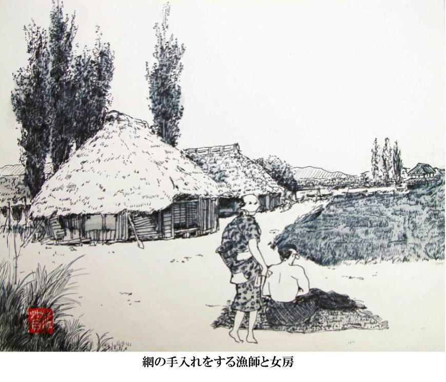
りつ子は文吉という馬掛やの酌婦と友達になった。文吉は馬掛やにいる五人の女の中で一番若い。 だから、文吉は酌婦とはいっても、半分は飯炊き女中のようなものである。文吉はいつも桟橋の下の渚で洗い物をする。りつ子も同じ渚で、日に幾度も洗い物をする。それで、いつの間にか顔見知りになり、口をきくようになった。
文吉は常陸の磯浜というところから、去年の春、長太郎に連れて来られたのだそうだ。年は十六だが、背が低い童顔なので、りつ子より四つも年上にはとても見えない。
「静かな日なんぞは、東の方に海鳴りの音がするんだ。きっとあれは磯浜の方からだなって、そう思うんだけど、でも、暮しはこっちの方がずっと楽だから、ちっとも帰りたくないな」
文吉の唇は桜の花びらのようにうっすらと紅い。
「ほんとの名前は、とらっていうんだけど、桂庵の長太郎が、とらなんて名前じゃどうにもなんねえって言ってね、この前まで馬掛やにいた酌婦で、文吉っていう人がとても売れたから、お前も文吉にしろって言って、それで文吉になったんだ」
文吉はりつ子が東京から来た人間だというので、根ほり葉ほり東京のことを聞く。りつ子の知っているのは小名木川沿いの町並みと、千住界隈ぐらいなのだが、東京の話をすると、文吉の目は猫のようにきらきらと輝くのだ。
「船でどこへでもいけるなんて、いいだろうな」
文吉はしもやけで赤くふくれ上った手で洗濯物を洗いながら、やはり、しもやけで紫色にふくれた頬を微かに歪めて、しみじみと言う。
「ここが気に入らなけりゃ、あしたは別のところさ行っちまう。そうやって、どこへだって行けるんだもの、ほんとにいい身分じゃないか」
「ちっともよくないよ。おっかさんはいつも陸の上に寝てみたいって、念仏みたいに言ってるよ」
「あたしなんか、今すぐにだって船乗りの女房になりたい気持だよ。漁師はこのあたりでうろうろしてるからいやだけど、船乗りなら利根川へだって、東京へだって行けるんだものね」
文吉はこの村のことを何でも知っている。洗たくをしながら、きらきらと目を輝かせて、早口でいろんなことを聞かせてくれる。たとえば、長太郎は桂庵で人の売り買いで金をもうけているから、げじげじのように嫌われているとか、達三は貧乏だが漁師らには好かれているとか、弥一郎は、ほんとうはどろぼうなんだとか。
「あんな大きな鯉を捕って来るにはわけがあんだ」
文吉は大まじめな顔をしてこんなことを言う。
「弥一郎は於朶って言うとこさ入った鯉を捕って来んだけども、それはみんな他人の作った於朶でね。弥一郎のものなんぞひとつもないんだ。人の造ったとこに、夜、こっそり忍び寄って、根こそぎかっさらってきてしまうんだ。桂庵の長太郎はね、いまに弥一郎は巡査につかまるぞって、そう言ってるよ」
文吉の両眼は怪しく輝いている。盥の中の水も日の光にきらきらと光っている。弥一郎さんがどろぼうだなんて......、りつ子は少し文吉が憎らしくなる。
「そんなこと、うそでしょう」
「うそなんかじゃないよ。弥一郎がおだ荒しだってことは、ここらあたりの者はだれもが知ってるんだよ」
文吉は、鯉おだを仕掛けるのはたいへんなことで、そこらの漁師ができることではない。山や田んぼをたくさん持っている、お大尽のやることなのだと、りつ子に説明する。
文吉は店に上る漁師から、さまざまな漁の仕方を自慢話の種に聞いているらしく、まるでほんものの漁師ででもあるかのように、いろいろなことを知っているのだ。
鯉於朶というのは、水の中に組んだ櫓のようなものである。長さ二間余りの松材を数百本使って、湖のここぞという場所に櫓を組む。
まず四方に頑丈な杭を打ち込んで、その中へ松材をぶち込む。水の流れを止めて、鯉が入り込みやすい場所を造ればいいのだから、陸上に櫓を組むように、きちんとやる必要はない。
山で松の木や椎の木を、馬車に四、五十台分も伐り、それを船で運んで水に沈めるのだ。
鯉は冬になると、水の動きの鈍い深みに集まる習性を持っているから、於朶が築かれると、良い住み家が出来たとばかりに、その中へ入って冬眠する。
漁師は頃合いを見計らって於朶の周りに網を仕掛け、於朶の中を竹竿でめくらめっぽうつつき回すと、眠っていた鯉は驚いて、於朶の外へ飛び出してくる。そして、哀れにも仕掛けてあった網につかまってしまうという次第だ。
けれども、この漁は、冬一回しか出来ない。一度捕ってしまうと、もう空巣も同然で、次の冬まで待たなければならない。それで、漁だけで食っている漁師は、こんな漁の方法はばかばかしくて、とても出来ない。於朶を持っているのは、大百姓をするかたわら、遊びで漁をする金持ちだけである。弥一郎が鯉を盗んでも、漁師たちには何の関係もないのだから、弥一郎を悪くいう人間は、この村にはあんまりいないのだ、と文吉は言った。
「馬掛やは、弥一郎さんがおだの鯉を捕って来たって知ってて買ってるの？」
「あたり前だよ。今どきどこで鯉が捕れるのさ」
文吉は笑った。
「でも、長太郎さんが言うように、もうつかまるかもしれないんだったら、やめるように言ったらいいじゃないの」
「そんなことできないよ。だって、弥一郎が鯉を持って来なくなったら、鯉料理が出来なくなるし、それに、弥一郎だって、お金が入んなくなっちゃうもの。明日から食べられなくなっちゃうだろう？」
文吉は、紫色にふくれた手で腰巻をにぎって、渚の水の中でばしゃばしゃとすすいだ。
水鳥が右手の葦原に五、六十羽も群れて、魚を漁っていた。遠くに漁船が二、三艘浮んでいた。西風が吹いて、まくり上げた腕が、ちぎれるように痛かった。文吉の額に垂れた髮の毛が、そそけ立っていた。頬が紫色に腫れているのに、両眼が妙に白くて、気味悪かった。
夜、おっかさんと銭湯に行った。銭湯は志戸崎村のほぼ真ん中にあった。馬掛やの向いが塗師やでその並びが成瀬織物染物や、次がせんべんや、その隣りが菊地魚問や、貝塚しょうゆやと続いて、その西隣が、くるすおかしや、その並びがお風呂や。だから、船から歩いても、五分とかからない。銭湯は「あいのやふろや」という名前がついている。
一、二代前に小田の近くの境村から移って来た時から、「あいのや」と呼ばれているのだが、なぜ、そう呼ばれているのかよく分らない。
番台のおばあさんは、七十をとっくにすぎているように見える。銭箱を前にちょこんと座って目をつぶっている。「大人一人、子ども一人」そう言うと、はりつきそうに皺の寄った瞼を開いて、十五銭と言って金を受け取り、銭箱の中へほうり込むと、もう目をつぶってしまう。
志戸崎というところは、蒸気船が出入りして、行商人だの旅の者がしょっちゅう馬掛やに泊っているから、他所者を見ても、ちっとも珍しくはないのだろう。
「綿引さんの薪問やで、手間取りをさせてくれることになったよ」
おっかさんが湯につかりながら珍しく嬉しそうに言った。
「長太郎さんが口をきいてくれたんだ」
「長太郎さんは人の売り質いをして金もうけをしているから、村の人にひどく嫌われてるって、文吉さんが言ってたよ」
りつ子は周りの人に聞えないように、小さい声で言った。
「楽して金が入る人間を見ると、悪口を言いたくなるものなんだ」
うめは垢の浮いた湯の中に手拭いをつけて、脇の下をごしごしとこすった。
「文吉さんの話ではね、馬掛やの万吉っていう若い酌婦を長太郎さんがとても気に入っていて、今の女房のお春さんという人を追い出そうとしているんだって」
「ふうん」
「子どもはお春さんが先のご亭主との間につくったんだから、長太郎さんはちっともかわいがらないで、それでお春さんと長太郎さんは別れることになったらしいよ」
「おまえもおせっかい焼きになったんだね」
うめは手拭いをしぼって顔をふきながら、上気した顔でりつ子を見た。
「他人同士がどうのこうのなったって、あたしたちにゃどうしようもないじゃないか。他人さまにゃそれぞれの事情ってものがあるんだから、いちいち口出すのは馬鹿げたことだよ」
うめはそのお春とかいう女も、百万遍を信じれば、もしかすると救われるかもしれないけれども、きっと信じやしないだろう、とりつ子に言った。
夫の升吉が小網町のお芳と手を切ってくれたのも、百万遍のおかげである。男は一度や二度は、別の女にうつつを抜かすということに昔からきまっている。けれども、男が戻って来てくれるかどうかは、こっちの心次第だ。長太郎がお春とかいう女と別れる気になったとすれば、女の方にも責任の一端はあるのだろう。
うめは志戸崎の浜に着いた時、以前からの微熱が抜けなくて、体が抜けるようにだるかったが、二、三日前から少しずつ腰が軽くなった。長太郎が一日三十五銭の手間賃で綿引さんの仕事を探してくれたのも、これからだんだんと、いい方に向くあらわれなのかもしれない。
どこでもいい、この観音様の下の林の中へでも、十坪ばかりの小屋を建てて、そのまま住みつければ、どんなに幸せだろうと思うのだけれども、夫の升吉がいつまで久蔵の船に乗っていられるのか見当もつかないし、口に出して陸に住みたいというと、いつもその夢はこわれてしまう。
「そのうち、おとっつぁんの船にのせてもらって、土浦っていう町へ行ってみようか」
うめは垢の浮いた湯に身を沈めて、そのあたたかさにじっと目を閉じていた。
甲高い声がして、若い女たちが十人余りも入ってきた。十七、八から二十二、三のはちきれそうな体をしている。女たちが入って来るなり、男湯にもどやどやと大勢入って来る足音がして、湯の中はたちまち市場のようににぎやかになった。板仕切り越しに、
「おい、およね、もうすっぱだかになったのかやー」
と、馬鹿でかい若い男の声がした。
「おせいもおこしをとったのかやー」
と、別の男が叫んだ。風呂場がどっとゆれ動いた。仕切り板をどんどんとこぶしで叩く音がした。
「五郎の助平！」
「はしごなんぞかけて来たって、決して入れてやんねえどー」
「こねえだ一晩、軒下で立ってて、鼻水垂らしたのは誰だっけー」
女たちは湯をざざあとあびると、湯船の中に勢いよく飛び込んだ。七、八人も入ると、もういっぱいで、湯が滝のようにザザッとあふれた。男たちが仕切り板をどしんどしんと叩いた。女たちもきゃっきゃと騒ぎながら、濡れた板を叩き返した。女たちは板仕切りの向うの男たちに気をとられて、りつ子やうめの存在には全く気づかぬ様子だった。
この娘たちは、風呂屋から少し先にある中村製糸工場の女工たちだった。
風呂やの西隣りが柳沢綿やさん。お次が升吉の雇われている久蔵の飛脚船の家で、その次が矢口煮干しや、中村製糸工場はその隣りに建っている。七十人からの女工を抱える大工場だから、風呂場ぐらい工場の中にしつらえてあるのだが、女工たちは工場の風呂に入るのは面白くないらしく、毎日十数人があいのや風呂やに入りに来る。すると、女工たちが入ったのを見すまして、十五、六人の若い漁師たちが男風呂に入ってくるから、風呂やのばあさんは、女工たちが大のお得意なのだ。
製糸工場の持ち主は中村初太郎という男だが、やることなすこと大きくて、気性も実にさっぱりとしているので、みんなから「出島太郎」と呼ばれている。
初太郎が志戸崎に製糸工場を開いたのはごく新しくて、大正三年のことだから、まだ十年になったばかりだ。初太郎が工場を開く前、ここは空地になっていたが、空地になる以前は、志戸崎の財閥、貝塚松太郎の巨大な家が建っていた。
貝塚松太郎の家は、代々五左衛門の屋号を継ぎ、この一帯の大地主であったのだが、松太郎の代に汽船経営に手を伸ばし、これが失敗して没落した。その汽船というのは「朝日丸」という蒸気外輪船で、通称「貝塚丸」とも呼ばれていた。
松太郎は明治二十六年、土浦に「朝日丸汽船会社」を設立して、土浦から沿岸の村々を経由して佐原までの航路を開いた。しかしこの時にはすでに、内国通運会社が銚子丨土浦間に外輪蒸汽船を就航させており、また貨物輸送についても明治二十三年来、銚子汽船会社が蒸気船「銚子丸」を、銚子丨柏崎丨高浜間に運行して、海魚を樽につめて運送していたので、朝日丸の就航は、自然、この二つの会社と張り合う形となった。
朝日丸は新造船であり、速力も早く、乗客に対する扱いも丁寧だったので、最初の数年間は、たいそう好評だったのだが、明治二十八年に、内国通運会社と銚子汽船会社が共同出資して、土浦と 鹿島、佐原、銚子間の新航路を開拓し、また沿岸の村々にも細かく寄航することに改め、更に加えて、通運丸には佐原を経て、利根川沿岸の村々から遠く江戸川を下って東京へ出る接続便もあったので、朝日丸は急速に乗客を失っていった。
松太郎は最後には乗船料を無料にして、乗ってくれた人には手拭いを進呈するという、涙ぐましい努力までして、航路の維持に努めたが、そんなことで企業が立ちゆくはずがなく、汽船会社は明治四十二年に倒産し、松太郎一家は東京へ移っていった。
中村初太郎はこの跡地に目をつけ、大正三年に貝塚家から土地を借り受けて製糸工場を建設した。この工場は旧式の座繰り製糸ではなく、蒸汽タービンを使用した機械製糸による近代的工場だったから、志戸崎の人々はもちろん、出島一帯の百姓漁師はみんな目を丸くして驚いた。
初太郎の親は南村中台のごく貧しい小百姓で、百姓だけではとても食っていけなかった。それで祭りや運動会の時には手製の饅頭を箱につめ、鳥居の下や広場の片隅に店を広げて小銭をかせいだり、ふだんの時は箱づめの饅頭を背中にしょって、村々を歩いたりして暮しを立てていた。
こんなわけで、初太郎も小さい頃から奉公に出て働いたが、その奉公先というのが、出島の牧の内にあった製糸工場だった。女工が百人もいて、一時はとても盛んだった。ところがこの工場が明治の末年に倒産したので、初太郎は信州や土浦の製糸工場を見て歩いた。彼は志戸崎の浜に自力で製糸工場を建てようという野望を抱いていた。金は無一文同様だったが、建設資金は村のお大尽に貸してもらうつもりだった。そのお大尽というのは、坂村の台に住む小室縫太夫という人物で、土浦の五十銀行に莫大な財産を貯え、銀行から金を借りたくても担保がなくて借りられないような人々に、適当な利子で融資してやっていた。初太郎は目算通りこの人物から多額の金を貸してもらうことに成功した。
初太郎は工場を建てると、繭の確保に奔走した。出島から筑波にかけての一帯は、関東はおろか全国でも有数の繭の産地だったから、信州の大製糸工場が土浦に出店を開き、繭を大量に買い集めていた。繭を買うには金がいる。ところが、初太郎には繭購入のための資金がない。そこで、彼はどうしたかというと、繭を買う時には現金で払わず、一時貸してもらい、繭を生糸にして売りさばいてから、その金で百姓に代金を支払うという方法をとった。
「もちろん、繭を売ってもらってから二カ月も待ってもらうんだから、他の製糸工場と同じ値段で買おうなんては思っちゃいない。一貫目当り二十銭がとこ高く買わしてもらう。仮りに三十貫売ったとすれば、他に売るよりわしのところへ売った方が六円がとこもうかる。金が入るのが繭を渡した時に入るか、二カ月後に入るかは確かに大ちがいだが、六円という金も大したちがいだとわしは思うよ」初太郎はこんなふうに、百姓たちを説得した。
初太郎は、その日の銭がどうしても欲しいといった小百姓はさけて、これと目をつけた比較的余裕のある農家に足繁く通った。一度繭を売ってくれた家には、季節季節に酒肴のつけ届けをするし、正月には東京から取り寄せた上等の酒を持ってお得意先を回って歩いた。
最初は、初太郎に繭を売るのを危ぶんだ者も、初太郎が約束通り、貫当り二十銭も高く買った上に、節々につけ届けをしてくれると知ると、すすんで初太郎に繭を売るようになった。
彼らは初太郎が小百姓の伜でありながら、これほどの大工場を建てたことに多少の羡望の念を抱いていたが、初太郎が少しも威張った風もなく、誰彼なく工場へ呼んで見物もさせるし、飯も食わせるといった付き合いをするので、初太郎に好意を寄せる者が次第に多くなった。
「ああた苦しい台所で蒸気を回していたれば、そのうちきっと倒れっちまあど」
そう言って冷たく見ている者も村内には少なくなかったが、初太郎の工場はそんな陰口をよそに年々充実していくようにみえた。
初太郎の人気は、志戸崎の若い漁師や百姓の間で絶大であった。町の工場経営者とちがって、初太郎は女工の生活に全くといってもよいほど干渉しなかった。
土浦の製糸工場などでは、女工を一日中牢のような工場に閉じ込め、夜は狭い部屋に入れて外から鍵をかけ、休日にも保護者同伴でなければ絶対に外出させな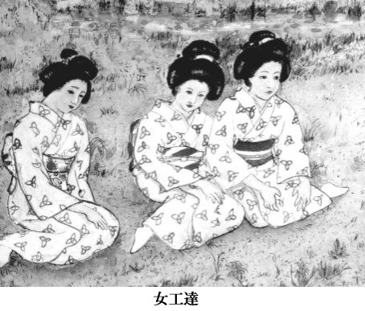い、というほどのひどい扱いをしていたが、初太郎の工場では、仕事中こそ工場内へ入れないものの、仕事が終れば、女工は自由に外出を許されるし、若い男が女工の部屋へ入り込んで夜遅くまで話し込んでも、決して追い出したりはしないのだった。
もちろん、七十人からの娘を預っているのだから、それなりの規律はあるのだろうが、男と女が好き合うのは自然の理であると、初太郎自身強く信じているらしく、常々〝もし好きな男が出来たら、わしが仲人になってやるぞ〟と、公言しているほどであった。
こんなわけで、中村の女工たちは、実に生き生きしているし、村の若者の顔もはればれとしていた。面白くないのは馬掛やのお熊のような女だが、もともと酌婦を求めて来る男たちと、製糸工場の女工に夜這いをしようという若者たちは、その心情がまるきりちがったから、お熊が怒るほうが筋違いなのだ。
「あたいももう少し大きくなったら、製糸工場の女工になろうかなあ」
りつ子は湯につかりながら、女工たちの若々しい肌を羡望の眼差しで眺めた。いっしょに湯につかっていると圧迫されるようで、頭がかっかとしてめまいがしてきた。
突然、ウアーとどよめきが上った。りつ子が女工たちの視線を追ってみると、素っ裸の男が脱衣場の戸を開けて、女湯の洗い場に入り込んで来た。男はタコのようで、全身から湯気が立ちのぼっていた。
「おらのこと、そん中さへえらせてくれ」
男は努めてまじめをよそおって、大声で言った。丸顔の、鼻のひしゃげた男で、背中から胸にかけての筋肉が、鍛え上げられて一本一本筋張って見えた。
「勝造、早くへえっちまえ」
板の仕切り越しに、男の声がした。二、三人が、どどんと壁を叩いた。大勢の男どもが大声でワ丨ッと叫んだ。
「へえって来てみろ、うんのめっちまあど！」(水の中に沈めるという意)
色黒の、胸の張った女工が桶を両手で抱えて大声で叫んだ。
「助平やろう、みつ子、おめえ何とか言ってやれ」
「知んねえょ、おら、勝造なんど見たくもねえし」
みつ子と呼ばれた女は肩まで湯につかって、赤い顔をいっそう真っ赤にして横を向いた。
「早くへえれ、へえらねえと五十銭のばっ金だど！」
壁の向うで野太い声がわめいた。
「五十銭もとられてたまるか！」
勝造はよしと決心して、風呂桶に手をかけると、湯船の中へ右足を突っこんだ。髮をひっつめに結った丸い目の女工が桶を振り上げて、その右足を思いきり叩いた。
「いてて......そうたことすんな。ちょっとだけ入れさせてくれりゃ俺の顔が立つんだ」
「何がおめえの顔だ。おめえのこと入れてやったれば、今度はどんな奴らが来っか知れたもんじゃねえ。出ていげ、出ていげ」
女工たちは手に手に桶を持って、勝造の体に湯を浴びせはじめた。
「ちっとでいいんだ、......」
勝造は執拗に湯船にしがみついた。しかし、十人もの女たちから絶え間なく湯を浴びせかけられて、とうとう耐え切れなくなり、頭をぶるぶると、まるで河童のように振って、目をしょぼしょぼさせた。素っ裸の勝造の格好がなんともいえずおかしくて、りつ子は思わずくすりと笑った。女たちもアハハ、と陽気に笑った。番台のおばあさんが脱衣場まで降りて来た。
「勝造、今度またこうたことしやがったら、もう二度と入れてやんねえど」
ばあさんはしわがれ声で勝造を見上げて言った。
「客だと思って大目に見てやってんが、こうたふざけたことばかしやるようでは、村の肝煎りからおめえの親に話してもらあしかねえ」
勝造はしきりに濡れた頭をぼりぼりとかいた。
「早く行げ！」
ばあさんは叫んだ。勝造はぐずぐずしてその場に立っていた。しかしばあさんがほんとに怒った顔をして
「もうはあ入れてやんねえど」
と、叫んだので、勝造は女湯の方をしきりと振り返りながら、男湯へ通じる戸をあけて、気取った足どりで出ていった。ばあさんは女湯の方へ腰を曲げて歩いて来た。
「おめえらも、嫁入り前の体なんだから、ちゃんと身をつつしまねえと、とんだことになっと。中村の旦那は大様だから何とも言わねえがしれねえが、村のもんの目はそうたに甘かあねえ。あんましふざけてるつうと、嫁のもらいてがなくなっちまあかんな。女は女らしくしてねえと、泣くのは自分なんだ。そこをよおく考えろ」
ばあさんはこう言って、あたりをにらんだ。それから手を後ろに回して、番台まで歩いていき、 〝よっこいしょ〟とかけ声をかけて、台の上にのぼって背を丸めた。
女工たちはくすくすと笑って、互いの体をつついたり、小声でささやき合ったりした。
「みつ子、誰ももらいてがなくても、おらはおめえのために家建てて待ってっから安心しろや」
男湯の方から勝造の声がした。男たちがどっと笑った。みつ子は白い肌を真っ赤に染めて壁の方を向いていたが、その横顔はとてもうれしそうで、りつ子は勝造やみつ子がひどく羡しかった。
湯を出ると、月の光に湖が銀細工の机のように静かに光っていた。波が鋭いでこぼこを作っていた。対岸のなだらかな丘が、夜空に黒々と見えた。
「ほんとに、あんな女工さんになれたらいいだろうな」
りつ子は冷たい砂地を、ぴょん、ぴょんと自分の影を見ながら跳ねて歩いた。
「おみつっていう人、とてもいい人みたいだったね」
「百姓の娘だな。勝造っていうのは漁師らしいから、嫁に行ったら苦労するだろうよ」
「苦労したってかまわないよ。勝造って人、面白そうだもん。胸に毛が生えて、まるで鬼みたいな肩してたっけね」
吐いた息が白い光となって、ぱあっと夜気の中に散っていった。舳先を砂の上にのり上げた苫船が、砂浜の広さの中でごみのようにちっぽけに映った。
茅屋根に月の光が吸い込まれていくのが常になく美しく見えた。それはまるでいつか東京湾で見た夜光虫が、船の上いっぱいに降ってきた時のように、きらきらと青い光を帯びて光っているのだった。
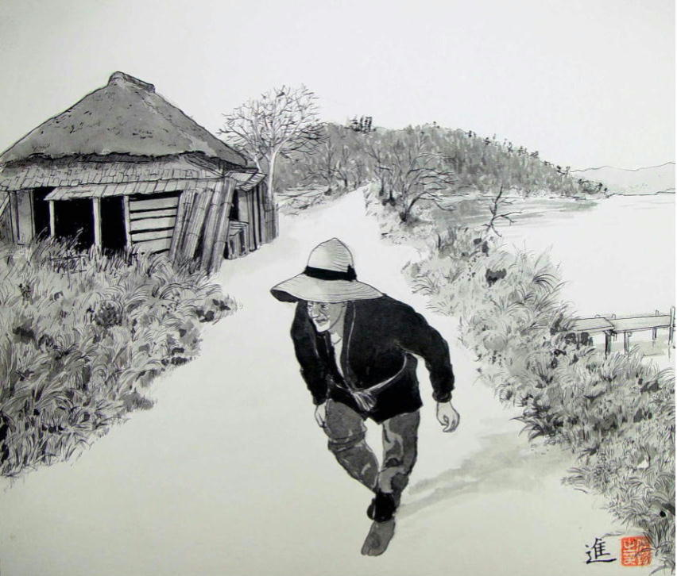
飛脚船の久蔵の足は、いっこうに良くならなかった。
「この分では夏頃までは働けそうだな」
升吉は言った。他人の不幸を喜んではばちが当るかもしれないけれど、りつ子は、この浜辺が気に入っていたから、久蔵の足がいつまでも治らなければいいなと、密かに願った。
母親のうめは、薪問やの綿引さんで働いていたが、東京通いの高瀬船が入ると手が足りなくなるので、高瀬船が入るたびに、りつ子は臨時に雇われて手間取りに入った。
高瀬船というのは、とても大きな船だった。りつ子の船と比べると十倍以上も大きかった。米なら何百俵も積むことが出来た。
高瀬船の船頭はたいがい家族を連れていた。船の中ほどに三畳ばかりの部屋が一つと、舳先の方に二畳余りの部屋がある。夫婦と子ども、舅姑で六人は楽に住める。薪は船底から船べりの上、一間半ばかりの高さに積み上げる。一艘の高瀬船が入ると、船いっぱいに薪を積むのに三日はかかる。
綿引さんでは、手間取りの女が十人ばかり働いている。馬車曳きが山のような薪を運んでくると、女たちは桟橋に近い広場に積み上げ、それをまた手分けして船の中へ運び込む。
松脂の香ばしい匂いがあたり一面に漂って、高さ二間半もある薪の山が、十も十五も広場に積み上げられている。こんなたくさんの山が、一つの船にすっぽり乗ってしまうなんて。
「今度の薪は、甚平さんの山の薪だよ」
と、お芳がゆるんだ薪の荒縄を慣れた手つきで縛り直しながら言った。お芳は台の百姓の娘で、りつ子より二つ年上の十四歳だ。
「甚平さんは出島一の山持ちだからね。畑もうんとある。五十町や百町じゃきかねえべよ」
お芳は生れながらの百姓の娘だから、見ているとほれぼれするほど手際がよい。荒縄をぎゅっぎゅっと締め上げて、ぽんと薪の山に積んでいく
「百町って、どのぐらいなのかな」
りつ子は背伸びをして、観音様の山をぐるりと見渡してみる。
「おらの家は甚平さんにゃ借金はねえけんども、台の村内じゃ十軒に二軒は借金があんだっぺ」
お芳は額の汗をつるりと拭ってため息をつき、すぐまた仕事にかかりながら話し続ける。
「おらんちの隣りの作蔵さんも、肥料を借りてるけんども、甚平さんのとこの倉には、借金と借米と肥料の貸し付け証文の束が、山ほど積まれてるっつう話だ。なんでも今の甚平さんの一代前の当主が、この借用書を己の門の前から並べて、ずっとこの川(霞ヶ浦のこと)の方さ向って道沿いに敷いてきたれば、二里の道ベったらと敷きつめて、浜まで来っちまって、そんでもまだ半分も余ってたって話だから、どれほど財産があんのか見当もつかねえよ。おっかさんが言うにゃ、まさかほんとにそうた馬鹿なことやってみせたわけでもあんめえって言うんだが、倉さ借用証文がうなってるってのはほんとのことなんだ」
お芳は、東京にもこれほどの金持はいるまい、とでも言いたげに、細い目をちらっと輝かせてりつ子を見た。
「秋のとり入れが終るまで、おめえがいんなら見物に連れてってやっと。お屋敷の前には、小作米をつけた荷車が幾十台もつながっちまって、身動きもとれないほどになっちまあんだ。屋敷には千俵倉が二つあるが、そんだけでは足りねえで、赤塚の岸にも倉庫がこさえてあって、米相場の具合を見て、米を高瀬に積んで東京まで運ぶんだ。今に自前の高瀬船をこさえて運ぶんじゃねえかって言う人もいるけれども、ほんとにそうなるんじゃねえかって、おれは思うよ」
馬車がまた一台入って来た。船頭の子どもが二人、ひきずりそうなどてらを着て、桟橋の下で砂山を築いていた。村の子どもが遠まきにして、船頭の子どもらを見物している。
「はかが行ってんのか」
頭の上で声がしたので、振り仰ぐと、桂庵の長太郎が赤い眼をして立っていた。
「お芳は若いけんとも働きもんだからなあ、おめえも見習ってせいぜいかせげよ」
長太郎は綿入れの袖をひらひらさせて、酒臭い息を吐きかけた。
「今年の春は芝居を呼んだから、お芳も小遣いかせいで見に来たらよかっぺ」
「ほんとに来んのけ」
「誰がおめえみてえな娘に嘘ぬかすかい、おれがこれまで来るつって、来ねかったことが一度でもあったか？」
「どうだかしんねえけんとも、いつくんだ」
「四月だ」
「もう少し早く来りゃいいだなあ」
お芳はにっこりして、りつ子を見た。
「東京でも旅芝居は来んだっぺね」
「旅芝居は来ないけども、芝居小屋はあるよ」
「どんな役者が来んのかな」
お芳の頬は上気してほんとにうれしそうだった。
芝居が来ると聞いて、姉さんかぶりをした女たちが五、六人、長太郎の周りを取り巻いた。
「おととし来た役者らはうまかったっけねえ」
「なんつったっけなあれは。猿若一座だったっけか」
「猿若ってのは三年前だっぺ。二年前は小神野一座だぞ」
「んだ、三月だったなあ。義経の役者はめっきりいい男っぷりだったっけよなあ。今年はあれが来んのけね」
「んだねえ、幸之助一座ってのが来るんだ。今、土浦から石岡の方を回ってるが、大入り満員だそうだぞ」
長太郎は、女たちが期待に胸をふくらませている有様を見て、大いに満足そうだった。長太郎の本職は桂庵、つまり口入れやであり女衒であるのだが、そればかりではなく、このあたりの村一帯の香具師(やし)の取締りのような役柄もつとめていた。
旅芝居が出島を回る時には、あらかじめ土浦の香具師の総元締めである鶴岡から連絡がある。たいがいこれこれこういう一座が行くが世話を万般よろしく頼む、という書きつけを持って、地回りの男が来る。すると長太郎は、村長や胆煎りにその旨を知らせて、小屋掛けの手配にかかる。
もちろん、自分で小屋掛けをするわけではなく、その村の百姓や叩き大工を指図して作らせるのだ。だから芝居小屋に関する一切の差配権は長太郎が握っている。村の顔役でも、横槍を入れようとすれば長太郎から土浦の親分に連絡が行って、たちまち面倒が起きることは火を見るより明らかだから、この件に関しては村長だろうが地主だろうが一切口をはさむことは許されない。
もっとも旅役者は、村の寺や大百姓の家へ分宿させてもらうのだから、村の人間が歓迎してくれるのでなければ、はじめから芝居など呼べる道理がないわけで、そこらあたりは、長太郎も村の人間も、昔からのしきたりを守って、それぞれの役割をうまく取りしきっている。
「長太郎は、ほんとはあんまし旅芝居なんぞやりたかねえんだが、いきがかりでやんなけりゃなんねえ破目になってるって噂だよ」
お芳はしばったばかりの薪束を、背の高さよりも高く重ね上げられた山の上に、背のびしてのせると、素早く束ねた数を目算した。
「これで六十三束だ。おめえはまだ三十束もいがねえぞ」
「うん」
「長太郎はな、三年前に大損したんだ。芝居呼んどいて雨っ降りになっちまって、そんで五日も遅れっちまった。その間、役者に飲み食いはさせねばなんねえ。小屋の土がどろどろになっちまったのを、土盛ってむしろを新しく取り替えねばなんねえ。なんやかやで百円も損しちまって、ひどく腹あ立ててたが、まさか桂庵をやめるつうこともできねえで、そのあとも呼んでんだよ。
小屋ん中で饅頭売んのにも、飴やだのせんべんやが商いすんのにも、みんな長太郎のとこさ挨拶に行かなけりゃ商売させてくんねえんだから、天気が良けりゃずいぶんと実入りが多いわけだけんども、これも水もんだからなあ、女の売り買いよりはずいぶんと骨が折れるらしいよ」
お芳は〝船ん中さ入ってみっぺ〟と言って、さっさと歩み板を踏んで高瀬にあがった。
薪の束が舳先から舵の手前まで、ぎっしりと隙間なく積み込まれ、船べりからもう五尺余りも高くなっていた。帆柱のあたりと、中央の胴の間から部屋へ通じるあたりだけが開いていて、そこがまるで洞穴のようにくぼんで見えた。
「こうた船が利根川で横波でも食らったればそれこそたいへんだなあ」
お芳は、積み込まれた薪の束をしみじみと見回した。
「東京の人らは、薪がこんな風にして作られるだなんて、夢にも知らないね」
りつ子は松の香りにひたって、なんとなくいい気持だった。
富町や千住の長屋のへっついで燃える薪が、自分の手で束ねられるのかと思うと、とても不思議なような、誇らしいような、陽気な気持がした。
舳先の方の小さな部屋から、板屋根を開いて年寄りが出て来た。腰の曲った、意地の悪そうな人相の老婆だった。老婆は、りつ子たちを横目に見て、左舷のへりの上を薄い足で音もなく歩き、艫のとっさきまで進んで行った。
「目が見えんのかな」
「見えねかったれば、つっこでちまあべ(落ちるの意)」
りつ子たちが見ていると、老婆はくるりと着物の裾を巻き上げ、むき出しの尻を船の外へ突き出して、勢い良く小便を放った。永年の功のせいか、老婆の体は船べりから半分以上も外へ出ているのに、薄い足のうらが船べりにぴたりと吸いついたようで、体はぴくりとも動かなかった。
老婆は用を足し終えると、また同じ船べりを伝って、舳先の方へ歩いて行き、板戸を開けて中へ戻ってしまった。
「船が動いていても、ああやって用を足すんだっぺ」
お芳が感心したようにりつ子を見た。
「そりゃそうだよ。いちいち岸なんぞへ着けてられないもの」
「雨の日はどうすんだ」
「雨だって風だってしょうがないよ」
「ゆれんでねえのか」
「ゆれたぐらいで、やんないではいられないよ。船頭の家族が川で用を足せなけりゃ、いちんちだって暮らしていけないもん」
りつ子は言っているうちに、自分が船端から尻をまくって用を足している光景を思い浮べて、思わず顔を赤らめた。お芳も同じことを考えていたらしく、ちょっとばつの悪そうな表情をして盾をしかめた。
「ハハハ」
二人は顔を合せると、何となく気恥しさをごまかそうとして、つくり笑いをした。
「おらたちだって、畑ん中で用も足すし、野糞だって垂れんだもんな。同じことだっぺな」
お芳は薪の束の上に上って、東の方を眺めた。りつ子もまねをして、薪の上に上った。明るい日の光が波の上に輝いて、真正面に対岸の台地が青々と広がっていた。
「去年は水が少なかったから高瀬船が桟橋まで着けなくて、ひどく苦労したんだ」
お芳は言った。水が少ない時は、高瀬船の底が水底についてしまうから、桟橋から薪を運び込むことは出来ない。それで、高瀬は沖へ泊って、さっぱ船に薪を積んで運び込むのだが、こうすると、たいへんな苦労がいる。
去年はこんなわけで、全部積むのに六日もかかった。おととしは去年よりも水位は高かったが、それでも半分ばかり積むと、吃水が下がって水底に近くなったので、少しずつ深みに移しながら積んだ。それでこの時は五日かかった。
そこからいくと、今年は桟橋から歩み板を踏んで積み込むことができる。
「水が少ねえと漁の方もからきしだめだしなあ、雨っつうのは神様のおめぐみだな」
お芳は舳先の方へ歩いて行くと、そこから桟橋へぽんと飛び降りた。りつ子もまねして飛び降りた。
「そうたことすっと、板が抜けて怪我すっと！」
広場の方から、鉢巻をした男がどら声で叫んだ。女たちが新しくきた馬車から荷を降して、せっせと薪を束ねていた。
東風が吹いて、薪束の上のワラ屑がチラチラと光って飛んだ。汗をかいた馬が、桶の水を音をたてて飲んでいた。子どもたちが馬の尻のあたりに群れて、尻尾の毛を抜こうと狙っていた。
もうすぐ春がくる。もうすぐ春がくる。
志戸崎の村のどこからか、そんな声がひびいてくるような気がした。耳をすますと、中村製糸の機械の音と、成瀬織物工場の織機の音が、掛け合うように楽しく聞えるのだった。
「りつ子、そうたとこにぼさっとしてっと、手間貨もらえねえぞ」
薪山の向うから母親の声がした。母親は百姓女たちに混って、すっかり元気そうだった。
お芳は、せっせと薪を束ねはじめた。りつ子もその傍に屈んで薪を束ねた。お芳のように、くるくると巻いて、ぎしっと音をたててしばりたいのだが、それがうまくいかなくて、りつ子は、ちょっと舌打ちした。
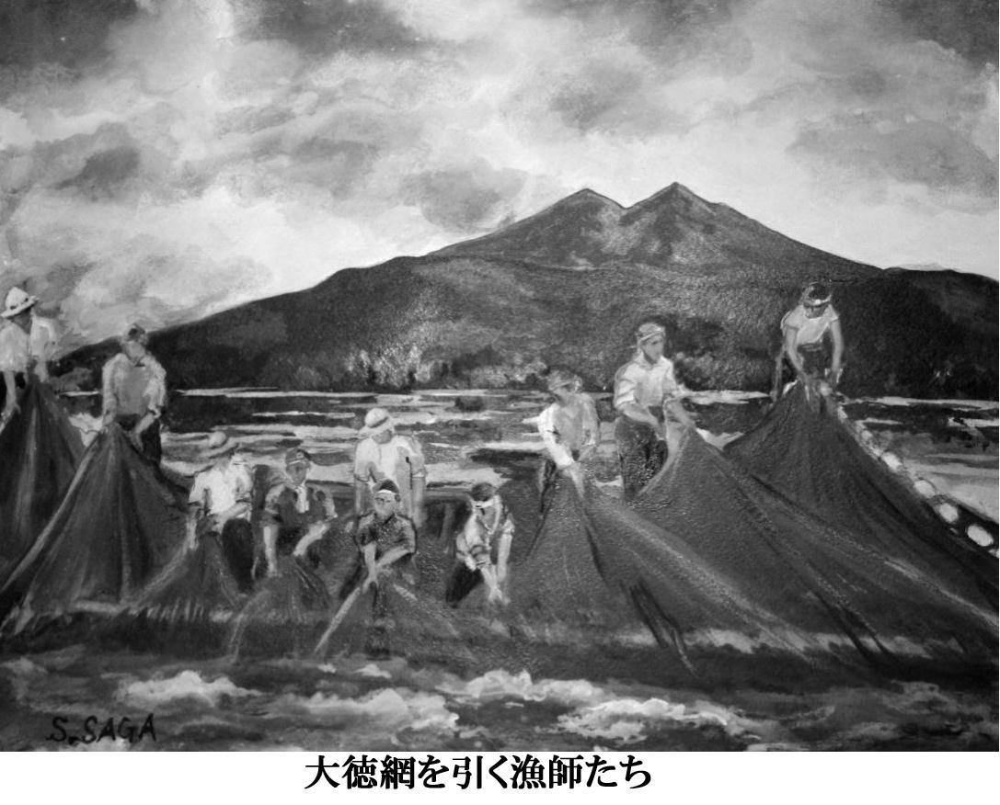
高瀬船が行ってしまったので、りつ子は暇になった。中村製糸で働かせてもらえないか、と母親のうめは長太郎に頼んでみたが、長太郎は、
「まだ年が二つ三つ若いだベよ。それに一人前になるまでにゃ、一年はかかるつうのに、覚えたころにゃ、この浜にいるかいねえか分らねえんだから、世話あするにゃ、ちっとむずかしいつうところだ」
と、言った。
「菊地の魚問やならば、下働きぐれえに雇ってくれるかもしれねえが、あそこはばあさんがしゃっきりしてて、嫁さんが働きもんときてるから、勤めんのも骨が折れるぜ」
とも言った。そして、
「そのうち、いい働き口をめっけてやっから、それまでのんびり遊んでいろ」
と気味悪いほど優しく言い、うめの見ていないところで、りつ子の手のひらに十銭銅貨をのせてくれた。
りつ子は文吉といっしょに毎日ザルを持って小川のへりを歩いた。村の子どもらも、りつ子と同じようにザルを持って川べりを歩いた。立ち枯れの葦の生えている水のよどんだあたりには、鮒が何匹もずくっている(凍えてじっとしていること)。手を入れて棒ぐいの周りを探ると、五、六寸もの鮒を苦もなくつかまえることができる。手のひらの上にのせて、日の光にさらしても、鮒は鰓をパクリパクリと動かすばかりで、はねようともしない。
「なんだか、かわいそうだね」
りつ子は捕まえた鮒をザルの中に入れると、つややかに光る鱗をしみじみと見た。
「放してやろうか」
「なんで？」
文吉は紫色の頬をふくらませてりつ子を見た。
「遊びに魚取りやってんではねえんだぞ。客に出すんだかんな」
「わかってる......」
「魚がかわいそうだなんて言ってたら、漁師はたちまち死ななけりゃなんめえ。こうたとこにずくってんだもの。それだけの命しかねえんだ。そのあたりにもかたまってっと！」
文吉は尻はしょりして、川の中を音を立ててずんずん歩いた。風が川面をなめて吹き、立ち枯れの葦が気味悪く鳴った。
観音様の山の松が、風にあおられて、コウコウと青い空の下で寂しく音を立てていた。
真冬の空が舞い戻って来たようだった。水の中を歩いていると、足がしびれて硬くなった。頭の芯にズキズキと血が流れているのがはっきりと分った。
「八月んなっとなあ、わかさぎが拾えんだ」
文吉は川から上って、首に巻いていた手拭いで濡れた足を拭いた。りつ子も手拭いで濡れた足を拭いて草履をはいた。指先が真っ白になっていた。草履をはいているのかどうか、目で確かめないと分らないぐらいだった。
「わかさぎはな、ちょうど今時分に卵を生むんだ。そんで、七月八月にゃ死んじまう。その死骸が渚さ打ち寄せられて来んのを拾って、天ぷらなんぞにして食うんだよ」
「死んだわかさぎを食べるの？」
「死んだつったって、まだ死んだばかしだもの、食ったって何ともねえよ。漁師の子どもら、腹空ってっから、拾ったそばから食っちまあよ、客にも出したことはあっけんとも、中毒したら大変だって誰かに言われて、それからは出さねえな」
風の中で数えると、ザルの中の鮒は十二匹あった。文吉は帰り道、風に背中を押されながら「お春さんがとうとう出ていったよ」と、ちょっと悲しそうに頬を歪めてりつ子に言った。長太郎は三日前に、土浦へ女郎のことで話しに行ったのだが、その間にお春さんは、子どもを連れて出ていってしまったのだという。お春さんは蒸気船には乗らないで、田伏まで子どもの手をひいて歩いて行き、田伏から渡し船に乗って玉造へ渡っていった。
「村の人は、いくらなんでも、風呂敷包み一つで出ていかせるなんてひどい話だって言ってるけども、お春さんも、どうせ長くは続かないと思って来たんだろうしね。三度目の亭主だったんだから、傍が考えるほど気の毒じゃないのかもしれないよ」
文吉は渚を歩きながら、ませた口調でそんなことを言った。
二月も末になると、日の光が強くなった。西風がやんで、ときどき暖かい東風が湖を吹き渡った。そんな或る日、弥一郎が船に乗せてくれた。
「どこへ行くの」
「大須賀津から八井田の先だ」
早春の、青と銀と紫色に光る波の向うに、対岸の台地がぼうっと浮んでいた。岸辺が葦でおおわれたあたりは、やわらかな光に包まれて、水鳥のうぶ毛のように温かい褐色の帯を作っていた。
「鯉とりに行くの？」
りつ子は訊いた。
「鯉なんぞ、もうとれねえよ」
弥一郎は艫に立って、まぶしそうに目を細めた。彼はゆったりゆったりと櫓を押していた。船端から見ると、水の色がとても暖かそうなのに、手を入れてみると、指が固くなるほど冷たいのだった。
「おだ荒しはやらないの？」
りつ子は水に手をつけたまま、その冷たさに耐えていた。
「はは、もうやらねえよ。見張りが厳しくてな、つかまっと牢ん中さぶち込まれっからな。来年までは休みだ」
おれの親もおだ荒しをやったが、捕まえられて三度ばかり牢に入った、と弥一郎は言った。その時は土浦の町の牢ではなくて、牛渡の薬師寺嘉右衛門の牢へ入れられたのだそうである。（注・薬師寺家は高島易断の創設者薬師寺嘉右衛門の父が生まれた名家である。二代目嘉右衛門は大実業家として知られ、京浜鉄道などの事業に携わり伊藤博文や大隈重信と親交があった）
「薬師寺には家ん中に牢があるんだ。それで、出島のもんが悪いことをするつうと、巡査が捕まえて薬師寺に連れて行くと、嘉右衛門は、〝わしにまかせておけ、牢の中へ入れて真人間にさせるから〟と、こう言って、巡査を帰してから、当の本人を牢から出して、もう悪いことはしねえって約束しろ、約束すれば放免してやる、とこう言う。
すると、誰だって牢なんぞにいたかねえから、もう決してやりやせん、と言うと、そのまま放してくれんだ。もっとも、俺の親父は二度三度とやったから、最後にゃ十日も泊められたって話だがな」
毎年春先になると、小作人は米がなくなる。漁師も漁がなくなって、食えなくなる。そうすると、薬師寺は食えなくなったもののために「ぶちき」というものを出す。「ぶちき」という言葉がどこから来たのか誰も知らないが、たぶん「扶持切米」というあたりからなまったのだろう。
つまり、命をつなぐための切米というわけだが、もちろん小作人は、薬師寺に抱えられた家来というわけではないから、「ぶちき」すなわち、米を借りれば利息をつけて返却する義務を負う。
「ぶちき」一俵の利息は一斗である。つまり、米がとれる時期になると、その年の小作米のほかに、一俵当り一斗の米を荷車に積んで運ばなければならない。その年払えなければ、その次の年まで繰り越しになる。
こうしたわけで、薬師寺の家には、借用証文が甚平のところと同様に倉いっぱいつまっている。
小作人は己のはんこを薬師寺に預けておいて、必要な時に使ってくれるようお願いしてある。薬師寺家の勢力がどれほどであるかということは、先代の嘉右衛門の葬式に、大隈重信が東京から焼香に来たという一事からも、その程度がうかがい知れようというものだ。
「そこいくと、おれんちなんぞは一反の畑どころか一畝もねえ。カラスが飛んで来ても、そいつにぷっつける土くれもねえつうんだから、さっぱりしたもんだ」
弥一郎は船をゆったりゆったりと漕ぎながら、アハハと高笑いした。水鳥が遠くに飛んで、そのはるか向うに、通運丸が煙を吐きながら、かたつむりのようにのろのろ進んでいるのが小さく見えた。
「地主ってのは、大したもんなんだなあ」
りつ子は東京に住んでいる時は、地主などという人間がこの世にいるとは全く知らなかった。それで、船からぐるりと見渡して、大きな手を広げて、その中に入りきれないほどの土地を、一人の人間が持っているなんて、りつ子は想像しようにも想像のしようがないのだった。
富川町に住んでいる人間は、みんなたたみ一畳で、宿賃を払えないと病気でも追い出された。それでも、追い出す方も貧乏人で、子どもなんぞは、りつ子よりまだひどいなりをしていたから、人間というのは、みんな貧乏なんだと思っていた。お屋敷町もあったが、この間の震災でみんな焼けてしまった。
「土浦の西の方には、もっとすごい大地主がいんだよ」
りつ子は、対岸の葦が少しずつきれぎれになっているあたりを眺めながら、お芳の話を思い出していた。
「勘兵衛という大地主の家ではね、あんまり小作人をしぼり上げたもんだから、みんなにひどく怨まれて、地雷火を屋敷ん中さ放り込まれて、人死にが出たんだけんども、この勘兵衛なんぞは、インディアンて言うオートバイさ乗って、木原に置いてある女さ会いに来んだよ」
木原というのは、牛渡の対岸の、八井田の西に当る宿である。お芳は一目見たさに、漁師の亀太郎の船に友だち二人と乗せてもらって、見物に行ったことがあるという。
「インディアンというオートバイは、馬ほどもあるえかい奴なんだよ。バンバンバンつう恐ろしい雷みてえな音立ててなあ、風みてえに突っ走って来る。一里も先からその音が聞えるほどなんだ。
その音が聞えるつうと、村の百姓ら、みんな突っ立っちまって、その音のする方眺めるわけだ。 山ん中さ入ってる「切り子」も、田んぼ耕してる作男も、水汲みやってる娘らも、みんな飛び出して来て、街道わきさ並んで、旦那の乗っかったオートバイが来んのを眺めてる。
そうして、いよいよ目の前を通り過ぎちまあつうと、その後を追っかけて、どんどん走っていぐんだ。
蒸気宿でも旦那が来たぞってえと、二階の一等部屋をきちんと片づけて、妾の女なんぞは鏡の前さ座ってペタペタ化粧して、加賀友禅の着物なんぞに紅白梅の帯をおおぶりに締めたりして、オートバイが庭さ着くころにゃ、ちゃんと仕上がってるつう具合だ。
旦那が上さあがっちまうと、百姓だの子どもらは、オートバイの周りさ三重も五重も人垣こさえて、そりゃあ大した騷ぎだよ。ガソリンの油の匂いがしてなあ。なんだか東京の匂いみてえで、みんないつまでも離れねえんだ」
りつ子には、オートバイの匂いが東京の匂いかどうか分らない。東京ではバスだの自動車は見かけるけれども、オートバイというのはあんまり見たことがない。一度千住の卵問やに、黒い洋服を着た人がオートバイに乗って来たけれども、その時は、やっぱり珍しくて、近所の人まで見物に行った。
りつ子は、勘兵衛という人が乗って来るオートバイを見たいと思う。こんな田舎なのにすごいなあ、としみじみ思う。
弥一郎は眠たげな目をして櫓を漕いでいる。もう八井田の浜は目と鼻の先だ。岸辺の葦原が青い空に真っ直ぐ突っ立っている。やわらの前に、漁船が一艘停っている。男が一人乗って、竹の棒で水底を探っている。
「オーイ、おめえ、いつ来たんだ」
弥一郎が船を近づけて叫んだ。
「二日めえからだ」
男は腰を伸ばして、こっちを見た。坊主頭の背の低い、目の鋭い男である。
「その娘はどっから拾って来たんだ」
「久蔵んとこで働いてる船頭の娘だ。とれ具合はどうだ」
弥一郎は男の船の側一間ばかりに近づけると、棹を差して船をとめた。
男の船の胴の間には、黒い大きな貝が山のように積まれている。カラス貝と呼ばれる二枚貝である。このあたりでは淡貝と呼んでいる。この貝は、日本で採れる淡水産の二枚貝の中では最も大きい。並のものでも五、六寸、大型のものは殼の長さが一尺にも達する。
「ずいぶんとったな」
弥一郎は棹を抜いた。
「そこらへんでやってみっか」
「んだなあ、そのやわらの先は、まだおらが手えつけてねえから、いいかもしんねえ」
男は言いながら、もう水面に顔をくっつけて竹の棒で水底を探りはじめた。
弥一郎は葦の原から二十間ばかり離れたあたりに棹を差すと、船の中に寝かせてあった道具を取り上げた。二間ほどの長さの竹の棒の先に、鉄の輪のついた袋がくっついている。
「船べりから、ずっと水の底見てみろ」
弥一郎は竹の棒を水の中に入れながら、りつ子に言った。鉄の輪のついた袋が、竹の棒の伸びるにしたがって、水の底にゆらゆらと降りていった。
「どうだ、あそこにえかいのがめえっぺ」
「どこ？」
鼻の先がくっつくほど水面に近づけて、りつ子は目をこらして水底を眺めた。青い水草が砂の上にゆらめいている。日の光にきらっと光るのは、砂の上を泳いでいく魚の群だろう。
竹の棒が水底に触れて、鉄の輪が砂の上をすうっとなでていく。水の流れが、ゆるゆると竹の棒を取り巻いている。鉄の輪が一瞬とまった。すると、何か黒いものがくるりと砂の中で回転して、鉄の輪の袋の中に吸い込まれた。竹の棒が上がって来た。
「ほれ、とったぞ」
弥一郎が持っている棒の先の袋の中に、七寸余りの大きな貝が、つやつやと輝いて水滴をぽたぽたと垂らしていた。
「この貝、ひとりでに袋の中にとび込んできたの？」
「アハハ、どこの国に貝が自分から飛び込んでくるとこがあるかい」
「だって、こんな貝、どこにもなかったじゃないの」
「そりゃおめえ、貝だってとられたくねえもの、砂ん中さ身い沈めて、ちょっとばかし砂の上さ口出して、パクパク息してんのさ。そいつをめっけて、竹の先の鉄の輪で砂から起こして網ん中さつらめえんだ」
「そうかなあ、さっきはくるって、ひとりでに入ってきたみたいだったけど......」
弥一郎は、にやにやして、竹の棒を水の中に降ろしていった。りつ子がいくら目をこらしてみても、砂の中に身を埋めた貝の姿はみつからなかった。
弥一郎は竹の棒の先でするすると水底を探っていった。カチリと鉄の輪に貝が当った。弥一郎はさっと貝を砂の上に起こして、たちまち網の中へ捕えた。
「ほれ、あそこにもめえる。オボソが泳いでんのもめえっぺな」
弥一郎が水の中を指さした。りつ子は目をこらして、指の差すあたりを一生懸命見つめたけれど、りつ子の目には、ちっぽけな魚の群が泳いでるのが見えるばかりで、貝の姿はひとつも見えなかった。
「なんにもないよ」
「ああたえかいのがめえねえんのか、そんじゃもうはあ、どうにもなんねえなあ」
弥一郎は愉快そうに笑った。
「これで捕ってみろ」
弥一郎は、船の舳先の方に寝かせてあった長い篠竹を二本取り上げた。そして早くしろという風にその一本をりつ子に渡した。二間余りもある硬い真っ直ぐな篠竹だが、先にも元にも何もついてない。
「いま少し岸の方さ船寄せっから、そうすっと、おめえにもめえるようになっぺ」
弥一郎は棹を櫂のように巧みに使って、葦原の五、六間手前まで近づけた。
「よおく見てみろ。砂ん中に黒い細いのがちらっと出てっぺ」
りつ子は、船べりから身を乗り出して、水面に額をくっつけると水底を眺めた。きれいな水の底に、日の光が弱々しく透過して、砂が青味を帯びて、ちかちかと薄く光っていた。
「ほれ、あのクロモの真中に、えかいのがあっぺ。めえっか？」
「うん、見える、ほんとに見えるよ」
「そんじゃ、その貝のとこさ、その篠の棒をおろしていげ。そろっとだぞ」
りつ子は言われた通り、手に持った篠の棒を、ゆっくりと水の底へ近づけていった。
「んだ、そして、その先っちょを、貝の口ん中さつっとしてやんだ。口がめえっぺ」
「うん、少し開いてる！」
「その開いてる口ん中さ、棒をつっとすんだ。殼さぶつかるつうと、貝めはびっくりして口を閉じちまあから、殼さは触んねえで中さ入れんだぞ」
りつ子は、鼻と額を、ゆらめく水の表面にくっつけそうになって、息をするのも忘れて、貝の口へ篠の棒を近づけていった。淡貝が黒い大きな唇を開けているのが、くっきりと見えた。
「んだ、んだ、まっすぐ下ろしてぐんだぞ」
弥一郎の声が、まるで水の中から響いて来るようだった。りつ子は、篠の先を貝のすぐ口先まで近づけた。心臓がどきどきして、耳の奥がじんじんした。
「なにやってんだ。そうたに先をふらふらさせてちゃだめだ。そこでいいんだ。すーと入れてみろ」
りつ子は、水の流れが篠の先端を押し流そうとするのを敏感に感じた。それはまるで、篠の先から貝を護ろうとしているかのように、棒の先をちらちらと動かすのだった。幾度やっても棒は貝の口へは近づかなかった。もう少しというところで棒は水に押されて、いたずらに砂の上をつついた。
「ああ、くたびれちゃった」
りつ子は真っ赤な顔をして、首を少し持ち上げ、ほおっと大きな息をついた。なんだか少しめまいがするようだった。にやにやしている弥一郎が憎らしかった。
「棒の先が揺れるんだもの、あんなとこに入れられないよ」
「しゃあねえな。かしてみろ」
弥一郎は、りつ子の手から棒をひったくると何のためらいもなく、貝のすぐ真上に細い先端を持っていった。
「こうやって、たあだこん中さ入れてやればいいんだ」
弥一郎は言いながら、細い竹の先を、貝のわずかに開いている隙間に、何の造作もなく差し入れた。貝はぱくりと殼を閉じた。
弥一郎が篠竹を引き上げると、その先に、篠竹の先をくわえた烏貝が、しっかりとくっつかっていた。ずいぶん長い間水の中にいたのか、殼のところどころに、青いきれいな苔が生えていた。
「やってみろ」
弥一郎は、貝を無造作に胴の間に投げ出すと、篠竹をりつ子に渡した。
「できないよ」
「はじめから、そうたにうまく出来るわけがあんめ。やってみりゃ、そのうちこつがのみこめるってもんだ」
弥一郎は、自分の竹の棒で、見る間に五、六個の貝をとった。りつ子は、貝の居所を見つけることは出来たが、とうとう採ることは出来ずじまいだった。
昼になったので、弥一郎はお櫃を開けて、どんぶりに飯を盛った。
「おめえも自分でよそれよ」
弥一郎は、りつ子に大きなどんぶりを渡した。それから茶碗で水を掬い、船底にそろりと置いた。
「油味噌は好きか」
「好き」
「そんじゃ、その右のあたりに、小せえ壺があったっぺ、そん中にへえってっから。淡貝の煮つけは、その横の弁当箱ん中にあっかんな、広げて食え」
弥一郎は、りつ子の出した壺を開けて、油味噌を飯の上に山のようにのせた。
りつ子も、どんぶりめしの上に油味噌をふりまき、その横に淡貝の佃煮をのせた。油味噌のくっついた箸を水につけると、湖の表面に小さな薄い膜が虹の色に広がって、淡く光ってたちまち消えた。
「漁師ってのは貧乏だから、なかなか嫁の来てがねえ。そんで、おれみてえに二十五になっても独り身で、汚ねえ褌に金玉大事に包んでなくちゃなんねえもんが幾たりもいんだ」
弥一郎は来月、安食の小作百姓の娘と見合いをすることになってるが、向うもカスカスで食ってるんだから、嫁をもらうと食う口が四つになる。それで、こんな暮しをしてもいいもんか、そこんとこが決心がいかねえと、独り言のように言って、空になったどんぶりで、湖の水をがぶっと飲んだ。
昼から二時間ばかりの間に、弥一郎は五貫ほどの貝をとった。一尺もの貝も十五枚もとった。大きな貝が船の底で乾いていくのを見ていると、りつ子は、なぜこの貝はこんなに大きくなるまで誰にも捕まらないで、今日、この日に限って捕まえられたのだろうと、そのことがとても不思議になった。
捕まった貝は「淡貝むき」という小さな刃物で、女らが殼と身を分け、身はその大部分を土浦の魚問やに売って、残りは醤油煮だの佃煮にして副食物にとっておく。殼は俵に詰めて、土浦の三好ボタン工場へ運んで行く。
〝一俵ぎっしり詰めて、一日かけて桜川まで運んで行って、そんで一俵三円にもなんねえ時があんだから割に合わねえ仕事だ〟と、弥一郎は言った。
「三好の工場にゃ、おめえぐれえの女っ子が働いてんが、あそこにゃ屑物のボタンが山ほど出来っから、女工らが、その屑物のボタンを使って、昼休みにおはじきなんぞやってんだ」
近所の子どもらも、屑物のボタンを拾いに来るという。工場の横の広場には、売れない品物が山になって拾ててあるから、子どもたちは遠くの町から三人四人と連れだって、ボタンの山を探し回って、光る貝のボタンの中で、比較的形の良いものや、色つやのよいものを選び出して、ポケットにいっぱい持って帰るのだそうだ。
「怒られないの？」
「誰が怒っかよ。捨てたもんだもの。ただのおはじきとちがって貝だかんな。つやがあって光るところがいいってんで、俺もときどきもらって来て、村の子どもにやっことがあんだ」
「おめえが欲しいんなら、今度行った時もらって来てやっから」
と、彼は言った。
弁当を食い終えると、弥一郎は船を馬掛の鼻へ移した。そして、そこでも五貫余りの貝をとった。東の方に浮島が見えた。光の加減か、その島は紫色の霞のようなものにすっぽりと包まれ、まるで水の表面から一 、二間もふんわりと浮んでいるように見えるのだった。
あの島にいつか行ってみたいな、りつ子は夕日に映える空の下の島を眺めながら、冷たい膝を抱いて、ぼんやりその島を眺めていた。
帰る途中、弥一郎は櫓を漕ぎながら、東京へ出ていった漁師の話をした。夕日が水に映えて、あたりの水が赤く光った。
「一昔前、出島の浜に嘉兵衛という男がいてな、この男も貧乏漁師だったんだ。そんでいつか東京さ出て行ぎてえと考えていたそうだ」
弥一郎は夕暮の湖をゆったりと漕いだ。
「おめえは東京育ちだから、ここらのもんが東京さ行ぎてえっていう気がどうたもんか、ほんとのとこは分んめえよ」
嘉兵衛も冬になると、淡貝をとって暮していたが、淡貝をただ食っちまうのはどうも惜しいと考えて、これを佃煮にして船に積み、利根川から江戸川を下って深川へ出た。
嘉兵衛は、佃煮にした貝を担いで、下町の路地々々を売って歩いた。ところが、だれ一人買ってくれるものがいない。佃煮なんぞは佃島が本場だから、ちっとも珍しくはないのだ。そこで嘉兵衛は一計をめぐらして、これを心の臓と肝の臓の特効薬といつわって宣伝して歩くことにした。
「いいかね、この薬を飲んで、黒い糞が出れば効いた証拠だ。もし万が一黒い糞が出なかったら、それはこの薬が効かねえつうことだ。そん時はすぐさま金を返す」
嘉兵衛はこう言って、長屋の者十人ばかりにただで貝の佃煮を分けてやった。すると次の日の朝、食べた者全員が真黒い糞をした。
腹の具合の悪い年寄りも、固い太った糞をして、食べ残しの貝を食った犬までが、石のように固い黒い糞をした。
嘉兵衛の薬は飛ぶように売れた。なんでも嘉兵衛は、この時、百円からも儲けて、帰りがけには深川の女郎やに五日余りも居続けて、それでも帰って来た時には、まだ五十円からの金を懐にしていたそうである。
「嘉兵衛は帰って来っと、すぐさま貝をとって佃煮にして、深川まで運んで売り歩いた。ところが、そううめえ話が続くわけがねえ。嘉兵衛は巡査に捕まって、十日も牢屋さぶち込まれた。そんで牢から出された後はすっかり滅入っちまってな、漁にもときどき出たっけが、一年ばかしで十余りも老け込んじまった。そして、その後ぽっくり卒中で死んじまったっけよ」
馬掛やの桟橋の下で、文吉が洗たく物を取り込んでいた。子どもらが渚をぴしゃぴしゃ走り回っていた。
「オ丨イ、文吉さあん」
りつ子は、立ち上って叫んだ。
「オーイ」
文吉は白い洗たく物を胸いっぱい抱えて、その場でぴょんぴょんと兎のように飛びはねた。
「りつ子は、いつから弥一郎の嫁さんになったんだあ」
「今日からだよお、たん貝を山ほどとってきたんだよお」
夕日が傾いて、波が金色にきらきらと光った。遠くから戻って来る漁船が、波の上に黒い虫のように浮んで、ちらちらと明るい波にゆられているのが目にしみて美しかった。
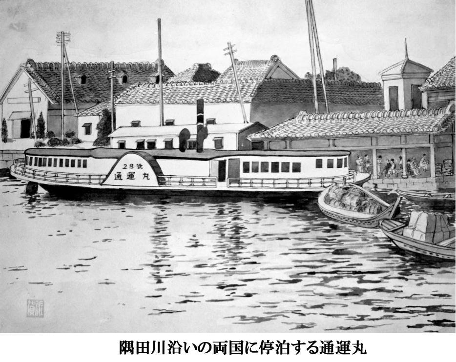
四月になった。久蔵の足は願い通りちっとも治らないので、この分では、この先もずっとここにいられるのではないかと、りつ子はとても嬉しかった。小名木川へはもう帰りたいと思わなかっ た。
苫船の中へ射し込んでくる朝の光が、日に日に美しくなった。太陽が東の行方の地平にのぼると、青や紺や金色や、目のさめるような赤い色の帯が湖に流れて、その色が瞬きする間にも、刻々と変っていくのだった。
「この先もここにいるんだったら、どっかの山の下にでも土地を借りて、家を建てたいもんだね」
母親のうめも、本気でそんなことを考えはじめているようだった。綿引さんでは一日三十五銭の手間賃を四十五銭にまで上げてくれたので、うめは綿引さんのおかみさんに心から感謝していた。
桂庵の長太郎は、旅芝居が四月に来るといっていたが、さっぱりその気配はみえなかった。馬掛やのお熊には、五月になる、と言ったそうだが、ほんとかどうか分らなかった。
長太郎は、ちょくちょく蒸汽船で土浦へ行き、三日四日と泊って来た。お春さんが家出したあと、すぐに身受けしてもらえると思っていた万吉は、いつまでたっても長太郎がそのことを言い出さないので、もうこんなとこにはいたくない、いっそのこと東京あたりへ行かしとくれ、と言って、お熊を手こずらせた。
桜が散って二、三日雨が降った。木の芽がいっせいに吹き出した。鮒や鯉やタナゴが、田の間の小さな溝にまでのぼって来た。
子どもたちは、オゲという大ざるを持って、一日中魚を追った。オゲというのは、深さ二尺、差し渡し一尺もある大ザルで、底に穴があいている。子どもらはこのオゲを持って水の中へ脛あたりまで入って、めくらめっぽう、ザブリザブリと水の中にかぶせる。魚が入った時は、ザルのふちに魚が当ってバタバタとあばれるから、底の穴のあいた方から手をつっこんで、獲物をつかまえるのだ。
のっこみの季節になると、魚は群をなして岸辺に産卵にのぼって来る。浅い小川などにも、一尺余りの鮒が横になってのぼって来る。それこそ網をかけたら引ききれないほど入ってしまう。
鮒なぞはとれ過ぎて、問やが買ってくれないので、漁師は鮒に見むきもしない。それで自然、鮒をとるのは子どもたちということになる。オゲなどがなくても、手づかみでいくらでもとれる。 いったい岸辺一帯には、どれほどの魚が寄って来ているものか見当もつかない。
りつ子は毎朝、文吉といっしょに、オゲを持って渚を歩いた。五つになる義郎の長男の健治は、背丈ほどもあるザルをひきずって、近所の子どもらのあとをくっついて歩いた。
魚がザルの中に入ると、バタバタッと騷いで、魚がザルの縁に当る感触が腕から肩に伝わって、心臓が締めつけられるようにどきどきする。一尺余りの大鯉が、ちょくちょく入ったりする。
どじょうも面白いほどたくさんとれた。どじょうは、田んぼでとれる。田んぼには台地の水が谷地を伝ってだんだんに落ちてくるところがある。文吉は、そんな流れがどこにあるかよく知っているから、他の子どもらが来ないうちに出かけて行って、その流れの下にザルを置く。すると、小さなどじょうが流れにのって、つるつるつると落ちてくる。一寸五分ぐらいの、子どもの小指ほどの太さのどじょうである。
田のあぜにしゃがみ込んで、ザルの中を見ていると、三十分もしないうちに、ザルがいっぱいになる。
この小さなどじょうは、骨が細いからとってもおいしい。玉子とじにしたり、お味噌汁の中に入れたり、どじょう汁にしたりするのに、またとない材料になる。それでお熊は、文吉にどじょうをとりに行かせるのだ。
日曜日などには、中村製糸の女工なぞも、ザルを持ってどじょうを取りに来る。だから、日曜日は、朝日が上らないうちに行かないと、いい場所をとられてしまう。この前の日曜日には、六時に行ったのに、もう若い女工が三人も来ていて、とうとうそこは、一日占領されてしまった。
それで仕方がないから、りつ子は文吉といっしょに芹つみをした。芹は水の流れる田んぼの隅などに、いくらでも生えている。でも、一番おいしいのは、湖の渚に生える芹だ。
「よしの間に生える芹を食べたら、他の芹なんぞ食べられたもんじゃないよ」
文吉は腰巻をとって渚に置き、着物の裾をまくり上げ、腕まくりをして、草履をはいたまま水の中へ入っていく。りつ子もまねをして、着物の裾をお尻すれすれまでまくり上げ、草履をはいたまま水辺のよしの間に入っていく。
よしの生えてるところは、枯れたよしの倒れたのや、木片のかけらが打ち寄せられているから、裸足で入っていくのは危険だ。
よしの間に、青々と光る芹がぎっしりと生えている。絶えず水に洗われているので、根はくらげのように透明で、小さな葉は、つまみ上げると、ぴんと音が出るほど生き生きしている。
「お店に来るお客は、これがとっても好物なんだよ。ごまよごしをこさえてやると、よそのは食えねえ、なんて言ってくれるよ」
文吉は太股まで水につかりながら、小刀でサリサリと切り取っていく。
「こんな野芹は見たことないな」
りつ子も手あたり次第に芹をつむ。お尻に波が当るのがあったかくて気持いい。
「万吉なんて名前は、あんましいい名前じゃないんだね」
文吉は芹でいっぱいになったザルを渚に置き、腰巻をくるくると着物の下に巻きながら、きらっと光る眼でりつ子を見る。
「万吉さんは、長太郎にだまされたって、腹を立てて、出てってやるなんて息まいてるけど、今の万吉さんが来る前に、馬掛やにいた同じ名の万吉って女の人は、追っかけて来た男に殺されちゃったんだって」
綿引さんの桟橋にポンポン蒸気がとまっている。馬掛やの桟橋には通運丸が寄るのだけれど、綿引さんの桟橋は、高瀬船とポンポン蒸気が利用している。
ポンポン蒸気は土浦から出島の村々に寄港して、玉造の浜まで往復している。貝塚松太郎の朝日丸は、通運丸と競争して負けたけれど、そのあと出来た観光船は、航路を限って通運丸と競合しないようにしているから、お客も多くてけっこう繁盛している。
船を降りた五、六人のお客が、綿引さんの桟橋を通って馬掛やへ一休みしに入っていくのが見える。風呂敷包を背負って鳥打ち帽子を被っているのは、呉服の行商人だろう。
「殺された万吉っていう女は、今の万吉さんよりも年は二つ三つ上だったけど、色が白くて、とってもきれいだったんだってさ」
文吉が語ったところでは、その万吉という女は、福島の翁島というところから長太郎が連れて来たのだけれど、馬掛やに入って二十日目に、後を追って来た若い男に殺されてしまったという。
ポンポン蒸気が、大きな音をたてて遠ざかって行く。まるい輪が、風に流されて、どんどん東の方へ飛んでいく。棒杭にひっかけた草履から、水がきらきら光ってしたたり落ちている。
「なんで殺されたのか、そん時はあたいもいなかったからよく分らないけど、でも、人殺しなんて、ここらじゃ何十年もなかったから、それこそ大騒ぎで、とってもたいへんだったらしいよ」
殺した男は、翁島の小百姓の佐吉郎という若い男で、女とは言い交した仲だったそうである。
佐吉郎は地主に借金があるし、女の家も借金だらけで、とても息をついていけなかったので、女衒から口がかかったのを良いことに売りに出し、長太郎は福島の女衒からの連絡で、わざわざ郡山まで受け取りに行った。
ところが、連れて来てひと月とたたないうちに殺された上に、警察には数えきれないほど呼び出しをくうし、この時ばかりは、長太郎もほんとに音をあげたらしいと、文吉は何も知らないと言いながら、そんなことまで話してきかせてくれる。
「殺された女の名前をつけるなんて、いやなことをするんだね」
りつ子は文吉と並んで、砂の乾いた上に裸足の足を投げ出しながら、遠い対岸に目をやった。水上機がトンボのようにゆっくりと飛んでいる。一機、二機、三機、飛行機はなかなか動かない。十まで数えてもまだ同じ場所に停っているようにみえる。それでも、やはり動いていることの証拠は、少し目を離しているすきに、蚊のように小さくなってしまったことだ。
八井田の沖を横切って行く大きな白い船は、海軍の練習用のカッターという船だろう。弥一郎が海軍を嫌っているから、りつ子もいつの間にか嫌いになった。
馬掛やに戻ると、観光船の客が三人ばかり茶を飲んでいた。拾い子のお兼ばあさんが、火のない囲炉裏の横に荷物を置いて、早弁当を食っていた。拾い子というのは、村々を歩き回って、百姓家からいろいろな注文をとって歩く人のことである。注文を拾って歩くから拾い子と呼ばれるようになったらしい。
「いい芹をとったなやあ」
お兼ばあさんは、文吉とりつ子のザルをのぞき込んで、しわがれた声をあげた。
「もう飯食ってんのけ、まだ十一時にゃなんねえのに」
文吉は台所にザルを置いて、お兼ばあさんに茶をいれてやった。
「これからはあ、平川あたりまで回って、そこから御殿さ上んなけりゃなんねえから、早めし食っとぐだよ」(注・御殿という村が加茂の台にあるが、家並みは驚くほど大きく美しいので村全体がほんとの御殿のように見える)
お兼ばあさんは、六十とは思えぬ大口で、ぱくりぱくりと飯を食った。お兼ばあさんの亭主は、この村の馬車曳きだが、大酒呑みなので、ろくな働きをしない。苦労して育て上げた五人の男の子どもらも、みんな外へ出て行ってしまったので、お兼ばあさんは、いくつになっても拾い子をやめるわけにはいかないのだ。
お兼ばあさんは、成瀬織物染物屋に雇われている拾い子である。拾い子といっても、みんな中年すぎのばあさんばかりで、若い娘はひとりもいない。
成瀬に出入りしている拾い子は、お兼ばあさんも入れて十一人もいる。それぞれが、それぞれの注文取りの領分を持っていて、毎日、荷をかついでてくてくと何里も歩く。
成瀬さんは、霞ヶ浦一帯でも並びない織物染物工場だから、拾い子は出島一帯はむろんのこと、玉造から行方の台地、そして南の対岸の安中から浮島のあたりまでも出かけて行く。
りつ子は一度だけ、百姓のお芳といっしょに、薪を届けがてら、成瀬さんの工場をのぞいたことがある。建物がいくつもあって、大きな織物機が何台も動いている。
イタリアから運んで来たジャカートという機械が三台もある。茨城県にはこんな機械は成瀬さんにしかないのだといぅ。
機械を動かすのはむずかしいので、群馬の桐生から男の専門職人が二人も来ている。織り手の女工も同じ桐生から三人来ている。この女工たちは、去年の冬、荷物をまとめて夜中に逃げ出して、高浜から汽車に乗って、友部で水戸線の乗り継ぎを待っているところを、次の汽車で追っかけてきた職人たちに捕まえられた。
女工たちは、志戸崎は桐生よりずっと東京に近いと聞いて、勇んで出て来たのに、いざ来てみれば、湖に突き出たひどい寒村なので、とてもこんなところにはいられない、と三人で語らって逃げ出したのだが、今は気持も落ち着いて、村の娘たちに機械の扱い方を熱心に教えてやっている。
ジャカートのほかに、ちりめん織の機械が二台、羽二重織りが一台、縞織りの機械が一台ある。 縞織り機というのは、昔ながらの手織り機で、これで仙台平や、つむぎ織りの反物をこしらえる。
成瀬さんには、トタンぶきの形染工場もある。トタンは五分もある頑丈な鉄板である。ドイツから運んで来たそうだが、こんな屋根をかぶせているのは、出島一帯でも、この家ぐらいのものだろう。母屋の土間には、藍瓶が二十も並んでいる。瓶のふちにのっかって、職人が藍をゆっくりかきまぜている。
お兼ばあさんは、成瀬さんの旦那から、反物の見本と形染の見本を預かって籠に入れ、それを背負って、てくてくと村々を歩いて回る。
お兼ばあさんは、出島の牛渡から崎浜にかけてと、対岸の安中から大山の広い地域を縄張りにしている。対岸に行く時には蒸汽船を利用する。拾い子は、反物の注文をとるだけでなく、品物を届けた時に、金を預かってもくるのだから、なかなか責任が重い。
成瀬の旦那は大様で、品物を注文主に届けても、拾い子が〝支払いは暮にしてくれって言ってましたけれど〟と言えば、ああそうかと言って、それですんでしまうから、拾い子の中には十軒から金を預かって、そのうち八軒分だけ旦那に渡し、あとの二軒分は懐に入れて、〝後で払うと言ってた〟などとごまかして、いざ暮になると、他の百姓の金を手当して、穴はまた別の百姓のせいにしてしまうというような者も幾人かいるが、お兼ばあさんは、そんなことは一度もしたことがないので、旦那の信用はとても厚い。
「平川なんぞまで、何届けに行ぐんだか」
文吉は、籠にかぶさっているザルを取って中をのぞいた。
「だめだ！ いじんでねえど！ 大事な嫁入り衣装なんだからな」
お兼ばあさんは、あわててザルを籠の上にのっけて、文吉をにらんだ。
「汚さねえよ！ 魚の煮つけでも持って来てやっぺと思ってんのに、見せてくんねえなら出さねえど」
「ああけっこうだ。羽二重の錦織りを汚されちまったら、とても生きちゃいられねえからな。今度来た時に、よばれっぺよ」
お兼ばあさんは、弁当箱を大急ぎで小さな柳行李にしまってしまうと、それを風呂敷に包んでカゴの上のザルにのせ、その上に汚い布をかぶせて、よいしょと背負った。
「ごっそうさんでした」
お兼ばあさんは、奥に向って大声で叫んだ。
「ああ、また寄っとくれ」
奥の方からお熊の声がした。
「お兼さんは七十までは生きそうだな」
文吉は台所に芹を置き、洗濯物をバケツに入れて渚へ出た。万吉がぼんやり立って湖を眺めていた。遠くで達三が根切りさんと話をしながら釘を打っていた。
チョンチキチョンチキ、チョンチョン......。
「もうすぐ、よしきりが鳴くなあ」
文吉は水の中へ入って、手桶に水を汲んだ。
「六月まではいられんのか」
「久蔵さんの足が治んなけりゃいられっと思う」
りつ子は文吉から手桶を受け取って、盥の中へ水をザザッと入れた。波打ち際に淡貝の殼が転がっていた。拾い上げると、小さなエビが入っていた。白い殼の中のエビは、少ない水の中をピンピンと跳ねた。太陽の光が殼の白さに反射してまぶしかった。
ほんとにいつまでいられるのかなあ、りつ子には、殻の中のエビが、なんだか自分に似ているように思えた。殼の中に一生懸命隠れようとしている姿が哀れで、りつ子は殼を水の中へ戻してやった。波が砂をさらさらと洗った。山の方で子どもたちが呼び合う声がした。万吉が砂地の道を、観音様の方へ歩いて行った。
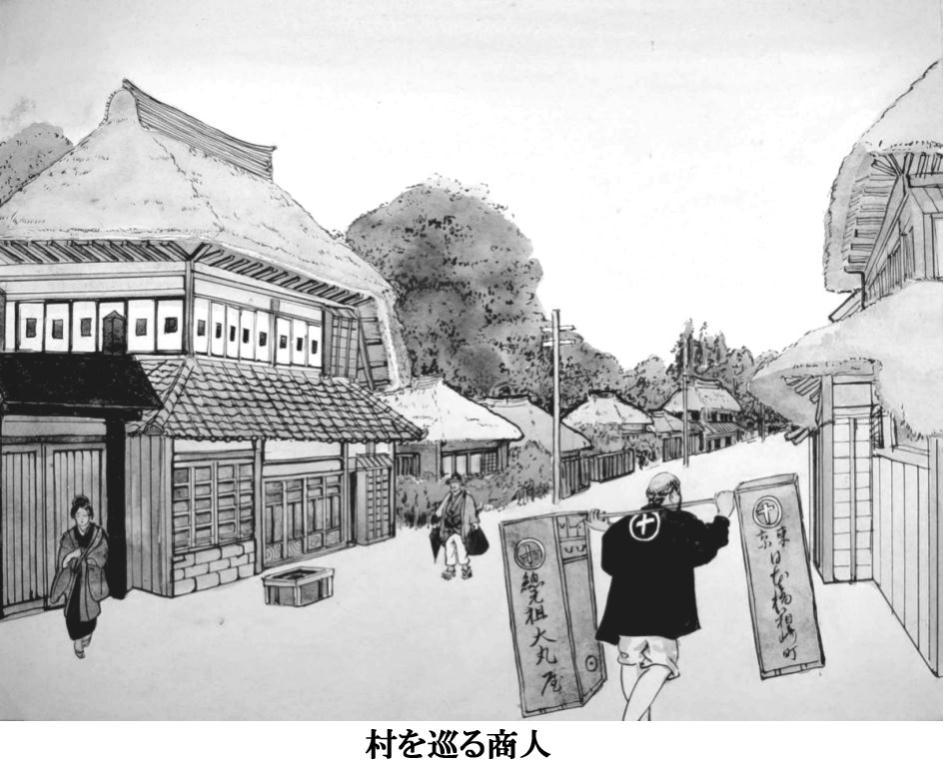
四月の終りに、万吉が馬掛やから逃げ出して、三日間も行方が分らなかったが、成井の鍛冶やにかくまわれているところを捕まって、長太郎に無理矢理連れ戻された。
長太郎は万吉を馬掛やに引っ張って来ると、髮をつかんで土間の中をぐるぐるとひきずり回した。それから、青竹で背中や腰をひどく叩いた。
「それぐらいにしねえと、片輪になっちまうよ」
お熊がとめるのを、長太郎は気狂いのように叩くので、谷下田網大工と漁師の亀太郎が、ようやく止めたのだった。万吉は一日だけ二階で寝ていたが、次の日からは働きに出た。顔付きが変ったようで、口もきかなかった。
この事件のあと十日ほどたって、弥一郎がごだひきをやるから乗んねえか、と言うので、りつ子は、ごだひき船に乗せてもらった。りつ子は長太郎が憎くて憎くて、腹がどうしても治まらなかった。それで、広い水の上に出ると、すうっと胸が軽くなるような気がした。
「ああた男をおなし人間と思ってっから腹が立つんだ」
弥一郎は網を引きながら、りつ子に言った。
「遊び人は、堅気の人間とまるきしちがあんだから、万吉を長太郎が殴ったからったって、おれたちにゃどうにもなんねえべ」
弥一郎の頭の中には、長太郎も万吉もまるでないようだった。額から汗が吹き出して、頬から頸を伝ってぼたぼたと流れた。
りつ子は、ごだひき網を巻いてみた。神楽棧はいくら力を入れても、まるで蛇がのたくるように、のろのろとしか回らないのだった。
「力をゆるめっと、網に引っぱられて神楽にぶっ叩かれっと！」
弥一郎は笑った。弥一郎が回すと、神楽はすいすいと、まるで水車のように回った。
弥一郎は四月のはじめから、毎日二時半に起きて朝飯までに四度、網を引いた。引き終えると、とった魚をいったん問やへ運んで量ってもらい、また船を出して、昼過ぎ、三時まで引くのだった。
りつ子は朝方、弥一郎が戻って来た時、ちょうど朝飯を終えて、浜で釜を洗っていたが、
「乗っけてやっかあ」
と、声をかけられたので、
「うん、のせてえ」
と、叫んで、釜を苫の板の間へ投げ出すように押し込んで、一目散に弥一郎の船に乗り込んだのだった。
弥一郎の船は、りつ子の苫船より一回り小さくて、長さが四間二尺、幅は一番広いところで八尺余りである。
一網引くのに、三百尋(一尋は約一・八メートル)のしゅろ縄を神楽棧で巻く。麻縄の方が丈夫だと思うのだけれども、麻は水につかると、一、二年で腐ってしまう。ところが、しゅろ縄は、幾年水の中へつけておいても腐ることがない。それで漁師は、好んでしゅろ縄を編んで長い縄にするのだけれども、弥一郎の家には、しゅろの木が無いので、地主さんから分けてもらうのだそうだ。
「あと百間あるね」
りつ子は、弥一郎が着物も股引も脱ぎ、褌一本になって、全身から汗を吹き出しながら神楽棧を巻くのを、船べりに手をかけて眺めている。
船の真ん中に据えつけた神楽棧が、弥一郎の力でくるくると回ると、水の中からしゅろ縄がするすると浮んで来て、神楽棧の心棒に水をぽたぽた垂らしながら真っ黒く光って、いそがしく巻きついていく。
「こんな長い縄を編むのはたいへんだね」
「たいへんだなんつってたれば、漁師なんぞつとまんねえよ。地主からしゅろを分けてもらうのはちょっと苦労すっけんともなあ」
弥一郎は下郷の地主の家に出入りして、垣根や庭の手入れをしたり、磨臼を曳いたり、薪を作ってやったりする。そのかわり地主の方では、弥一郎が漁に必要なしゅろや竹や木材などを、毎年ただでくれるのだそうだ。
弥一郎は、三百尋の長さのしゅろ縄を約三十分で巻き取った。それから縄をたぐって、蚊帳のように細かい目で出来ている綿糸の網を、船の上に引き上げた。しどの中で、糸のように細かい銀色のいさざが塊になって動いていた。日の光が濡れた網に当って、紅色の輪をつくっていた。弥一郎はしどを持ち上げて獲物をザルの中へぶちまけた。
いさざはちょうど、横田ザルのふちいっぱいになった。
「一斗二升てとこだな」
「こんなにとれたら、ずいぶんもうかるね」
「一網でひとよごた(横田ザルいっぱい)ぐれえとれなけりゃ、食っていげねえよ。一番盛りは、椎の木が花盛りになる頃だ。その頃は、網が引けねえほどへえることもあんが、そうした時は、問やも高く買あねえから、おんなじこんだがな」
弥一郎は、しゅろ縄の先に沈んでいた錨を引き上げると、五十間ばかり波に流されて船を移動した。百間ほど東で、亀太郎がやはり、いさざ網を引いていた。
「どうだあ、へえっかあ」
亀太郎の声が水の上を滑って来た。
「大したことあねえやなあ」
弥一郎は、錨を水の中へどぼんと投げ込んだ。しゅろ縄がするすると錨に引き込まれ、それにつれて神楽棧に卷きついたしゅろ縄が、カラカラと鳴って水の中へ沈んでいった。
船は波に押されて、どんどん西へ流れた。神楽棧は回り続けた。三百尋のしゅろ縄が全部、神楽棧からほどけてしまうと、弥一郎は、
「ほれ、手伝え」
と、言って、両手で網を抱えて、長さ三十尋もある大きな網を、素早く水の中に落とした。網が透明な水の中で、巨大なくもの巣のように、さあっと灰色の手を広げた。
船の長さは四間二尺だが、なるべく網の間口を大きくするために、舳先と艫から出し棒が出ていた。出し棒の端から端まではかると十二尋もあった。つまり、間口十二尋、長さ三十尋の網を、弥一郎は神楽棧を回転させて、一回に三百尋も引くのだ。
神楽棧を巻けば、しゅろ縄が、神楽棧の心棒にくるくると巻きつく。ところが、しゅろ縄の端は、錨に結びつけられて水底に沈んでいるから、弥一郎が神楽棧を卷くにつれて、しゅろ縄が心棒に巻きつき、その分だけ、船が錨の方へ移動していくという仕掛けだ。弥一郎は、三百尋の縄を一日に十五回以上巻き上げる。
「腕の強え漁師らは、朝三時からやって、十二、三回は巻くベよなあ」
弥一郎は言いながら、ぐいぐいと神楽棧を回す。汗はとっくに出切ってしまい、褐色の肌には、わずかに汗がにじんでいるばかりである。頸筋や背中は乾いた汗が塩になって、小さな無数の結晶がチカチカ白く光っている。りつ子は、生け間のいさざをつまみ上げると、日の光に透かしてみた。小っぽけな、鉛筆の芯でつついたような眼が、こっちを見ていた。
「こんなちっぽけな眼で、この魚は水の中をすいすい泳いでいたんだなあ」
りつ子は、その魚をぽんと水の中へ落した。いさざはもう死んでいるのか、水に浮いて、すぐ見えなくなった。高瀬船が大きな帆を上げて、土浦の方へゆっくりと移動していた。
目の前の水が、急に青黒く盛り上がった。見ると、三寸ばかりの背の丸い魚が、何千何万と群をつくって船の横腹を通り過ぎていくのだった。船端に押しつけられた一群の魚が、ガバガバと水しぶきをあげて、数十匹も飛び上がった。
「ボラだ！」
弥一郎は神楽棧を回しながら、ちょっと体を船べりから乗り出した。
「とれないかな！」
「この網じゃ捕れねえよ」
「つかんでやろうか」
「つかめられるか、やってみろ」
弥一郎は笑った。りつ子は身を乗り出して、水の中へ手を入れた。魚群はすぐ目の下を青い水流のように泳いでいった。手を入れると、その手のすぐ横をすり抜けて、銀色の矢のように走っていくのだった。
三、四間東の水面で、一尺もあるボラがバッと音を立てて飛び上った。
「夜、カンテラをつけて漁に出ると、ああした奴が、船ん中さ飛び込んで来ることがあら」
弥一郎は、ぐいぐいと神楽を巻きながら、ペロリと乾いた唇をなめた。船端に突っ張った二本の太い足に、濡れたしゅろ縄の水滴がぽつんぽつんと跳ねて、それが足が動くたびに、ちかちかと揺れるのだった。
「わかさぎなんぞも、群を成しているところさ船を漕ぎ入れるつうと、水が一面に白く煮え立っちまって、ピンピン跳ねやがんだ。朝方がいちばん多いけんども、夕方もそうしたことがちょくちょくあら。ざるっぱねって言ってなあ、そのうち見られっぺけんとも、気持のいいもんだぞ。
威勢のいい奴は、やっぱし飛び上り過ぎて、船ん中さ飛び込んじまあんだが、こうした時は、縁起がいいって言って、必ず大漁が続くもんだ」
弥一郎は、長いしゅろ縄を卷き取ると、網を上げて獲物を横田ザルに入れ、また船を百間ばかり移動させた。この前、八井田の洲で会った常松が、兵庫峰の沖でやっぱり神楽を巻いていた。常松の体は貧弱で、弥一郎の肩と比べると、半分しかないように思えた。
「おめえは、いい嫁さんになれんな」
弥一郎は錨を水中へ投げ込み、りつ子に手伝わせて網を入れながら、しみじみと言った。
「百姓娘なんどもらあと、船さなれるまで半年一年はかかっぺよ。現に利兵衛だの藤衛門の女房なんぞは、とうとう一生、船さ乗れねえで押し通しちまったんだからあきれたもんだ。おれんとこにも、どうた女が来んのか分んねえけんとも、おめえみてえなのが来てくれるつうと、世話あなくていいべよなあ」
弥一郎は、それから二網引いた。十時になったので飯を食った。お櫃の中に、二升飯が山盛りになっていた。
「おめえの分までお椀はねえから、勝手に握り飯でもこさえて食えや」
弥一郎は木の椀に飯を盛り、その上に梅干しと淡貝の佃煮をのせると、やかんの水をかけて、五杯も食べた。
「船で朝、早昼、昼食と三度食って、船降りてからまた食うから、一日二升飯は食っちまあんだが、神楽を巻ぐつうと、みんな汗んなっちまあから、ちっとも肥らねえ」
飯が終ると、弥一郎は舳先に突っ立って、気持良さそうに小便を垂れた。りつ子も艫の方に行って、腰巻をまくって小便を垂れた。春の風が水の上をさやさやと渡って、船縁にもたれていると、体がすうっと春の水の中へ溶けていきそうだった。
三時過ぎまでに、弥一郎は十二網引いた。問やで量ると十三横田あった。
「十五斗一升」
腰の曲った問やのおばあさんが、年に似合わぬ澄んだ声で言った。弥一郎は、二円五十六銭の銭をもらい、三十銭をりつ子にくれた。りつ子は、三枚の白銅貨をしっかりと握って、砂浜をぴょんぴょんと跳ねて歩いた。
江口屋の周吉が、店先に水を撒きながら、こっちを見ていた。周吉は、ひしゃくの水を空に向って、ぱあっと撒いた。
それは、りつ子の手の横をすり抜けて、銀色の矢のように泳いでいったボラの群に、とてもよく似ていた。ぱあっと周吉が撒くと、水滴は幾本もの束になってきらきら光って、たちまち砂に落ちて見えなくなるのだった。
「今日は配達に行かないの？」
りつ子は叫んだ。
「南根本まで行って、帰って来たばかしだよ」
周吉は、手に下げたひしゃくをぶらぶらさせた。田伏の方から荷車が二台連なって、砂浜の道をゆっくり近づいて来た。荷台の薪が山のようだった。曳いている百姓の被った手拭いが、ひどく前に傾いていた。
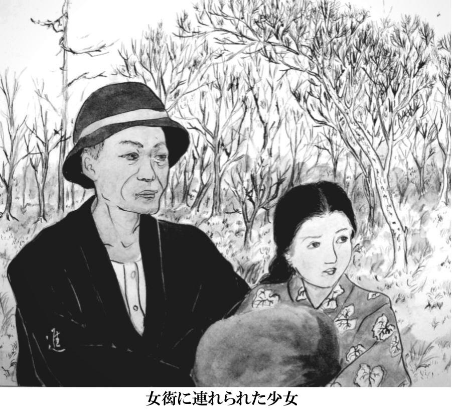
雨が降って、水嵩が急に高くなった。冬場は街道からたっぷり十五間はあった砂浜が、この頃は 三、四間しかなくなっていた。
りつ子は、綿引さんの手間取り仕事を昼過ぎに終えて、一人で先に帰って来た。観音様の山は、ひっそりしていた。砂浜にも人影が見えなかった。葦の穂が青々と水際に伸びて、よしきりが穂の先にとまって鋭い声で鳴いていた。りつ子は砂浜に沿って船大工の家の方へ歩いていった。五、六人の子どもが流木を拾って遊んでいた。小さな足跡が、濡れた砂の上に無数にちらばっていた。
達三の仕事場には誰もいなかった。台所の周りに、手桶や七輪や木裂がちらばって、灰色の痩せた猫が、へっついの前にうずくまって、恐ろしく光る眼でこっちを見ていた。
三角に組んだ櫓に、やかんがぶら下がっていた。その下で、燃え残りの焚火の灰が、白い煙をかすかに上げくすぶっていた。りつ子はその前にしゃがんで、棒きれで灰の中をかき回した。黒っぽい石のような塊が出て来た。石なのか、芋の燃えかすなのか、区別がつかなかった。
「もうはあ、手間取りはおやしちまったのかや」
お邦さんが姉さん被りをして、手桶を両手に下げて、家の中から顔を出した。
「おじさん、出かけたの？」
「んだ。稲敷の方さ木い見に行った。根切りの三郎さんと朝早く出ていったんだ」
「また船こしらえるの」
「んだよ。船大工が船こせえねえでは、食ってがれめえ。幸い浜田がこねえだの船、八分がとこ払ってくれたかんな、そんで少しゃ息がつけたってこった」
「お風呂の水汲むの、手伝いますか」
「おめえがか」
「はい」
「そうしてくれりぁありがてえ。おめえら、あいのやさ入りに行ってんだっけな」
「そうです」
「そんでは金がいってしゃあんめえ、おらじさへえりに来たらいいべ、......なに、おらじは二人きりだしな、いくら立て返しするつったって、三度もできるわけではねえ。そんだから、おめえらが入りに来てくれりゃ、もったいなくなくて、けっこうなこったってわけだ」
お邦は渚の方へ歩いて行った。りつ子は手桶を一つ受け取って、すぐ後ろについて行った。
「久蔵は少しゃ治っただかね」
お邦は手桶いっぱいに汲んだ水を右手に下げて、体を曲げ、砂地にくるぶしをとられそうになって、よろよろと歩いた。
「変りないって、おとっつぁんが言ってました」
りつ子は両手で手桶を下げ、お邦の後をついていった。
「おらは、そのうち、風呂場を水ぺたさばったり(すぐ水際にの意)にこさえてもらあべと思うだよ、麻生だの五町田の漁師の家なんぞ、みんな湖のすぐわきさ風呂桶運び出して、そんで、へえってんだからなあ、あれなら水運ぶ手間もねえし、夏なんどは月見しながら風呂さへえれるつうんだから、これに越したぜいたくはあんめえよ。
......んだが、若い娘っ子がいる家では、水ぺたさばったりに風呂場こさえるつうと、葦原の間から若い男らが船なんぞ乗り出して、のぞきに来んだ。おめえもそうなったら、少しゃ覚悟したがいいど」
お邦は、手桶の水を、ざあっと風呂桶にぶちまけた。二人で汲むと、水はたちまち桶いっぱいになった。
「菓子でも食ってげ」
お邦は姉さん被りを取って、台所から板の間へ通じる真っ黒い上り框に膝をつくと、手を伸ばして四角い籠を引き寄せた。
「昨日、沖の内の吉左衛門が置いてってくれたんだ。長峰から買って来たつうんだが、食ってみろ、うめえど」
お邦は言いながら、蜜飴のたっぷりしみ込んだねじりんぼをりつ子に一つ手渡し、自分も一本くわえると、ふたを閉じた。
「どうだ、うまいベ」
「うん、おいしい」
りつ子は、甘いつばきが口の中いっぱいにたまってくるのを感じながら、ねじりんぼをぽりぽりと噛んだ。
「すみません、ごめん下さい。......こちらに、りつ子がお邪魔しておりましょうか」
うめが、戸口から恐る恐る顔を出した。うめはお邦と目を合せると、腰を二つに折って挨拶した。お邦は立ち上がって、ちょっと首を折った。
「どうぞおへえりなせえ」
「お邪魔でしょうから」
「なに、邪魔なんどでねえ。誰もいねえんだから。茶でも飲んでいきなせえ。いましがた、あんたの娘さんに、風呂の水汲み手伝ってもらったんだ」
うめは、すすめられるままに、上り框に腰を下した。お邦は、やかんから茶碗に茶を注いで、うめに手渡した。
「いい娘だなあ、この娘は。器量はいいし、いま少したつと、男らがくっついて歩いてたいへんだど。うちさ風呂へえりに来いって言ったんだが、あんたもご亭主と来っといいよ」
「はい......」
「なにも高い金払って行ぐことあんめ、おらんちさ来ればただなんだから。その分米でもなんでも買えっぺな」
お邦は箱の蓋を開けて、ねじりんぼをうめの手のひらに二つのせてやった。
「どうだね味は」
「ほんとにおいしいです」
「この菓子は、房中の長蜂つう菓子やでこさえんだ。大した菓子やだよ。卵だの砂糖をたっぷり入れっから、出島一帯の菓子やは、みんな長峰から仕入れんだ」
灰色の猫が、のっそりと入って来て、お邦の膝の上にぽんと飛び乗った。お邦は、
「おめえも食うか」
と、言って、ねじりんぼのかけらを、猫の鼻先に突き出した。猫はちょっとにおいをかぎ、横を向いてあくびをした。
「この村は、昔っから人の気がいいから、よそ者でも住みつけねえことあねえよ」
お邦は、猫の頭をなでながら言った。
「志戸崎つう村は、もともと東から西まで十軒しきゃなかったつうんだ。それがいつの頃からか、台のもんがぽつぽつ下りて来て、今みてえに多くなったんだ。
......東の端にあったのがそれ、弥一郎らが魚売りに行く問やだよ。そんで、今でも屋号は東って呼んでる。昔は、しょうゆだの穀類も商ってたつうんだがな。その並びに来栖菓子やだの、あいのや風呂やだの、柳沢綿やがあって、そん次が貝塚の早船の家だ。そん次が矢口煮干しやで、そん次が貝塚松太郎、今は中村製糸工場だ。次が貝塚で百姓、そん次は柳沢百姓で、そん隣りが西つう屋号の貝塚の家だ。
この西が、昔の志戸崎の西の端だったんだっペ。ずいぶんちっぽけな村だったわけだ。それが、だんだん台の方から人間が下って来て、今みてえな賑やかなとこになっちまった。そんだから、ここは他の村みてえに、よそものは決して村さ入れねえなんつうことはねえよ。
飛脚船の久蔵んとこがもしだめになったれば、手が足りねえとこはいくらもあんだから、そこさ入って仕事もらったれば暮しは立っていぐから心配すっこたあ何もねえど」
とお邦は言った。
「房中ってところに、海の魚を扱う問やさんがあるそうですね」
と、うめが言った。
「房中ではねえ、八田だっぺ。八田の魚つるは、えかい魚問やだ」
「生蒸気が停るって聞いてますけれど」
「んだよ。八田の沖さ銚子から来た生蒸気が入るつうと、魚つるからサッパ船が出て、樽づめの魚を下ろして運んで来んだ。ここらあたりじゃ、みんなあそこから海の魚買あんだ」
「大勢人夫が働いているそうですね」
「ボデ振りだな。天秤棒の両はしさ桶をつるして、出島中売って歩くだよ。あんたの亭主がボデ振りにでもなろつうんじゃあんめ」
「もし今の仕事がだめになったら、魚問やで働こうかなんて言ってるもんだから」
「やめた方がいい。なにもあれだけの船頭の腕持ってるもんが、陸さ上って、天秤棒かつぐこたあねえべな。この上の太一郎ってのも、二代前はどっからか流れて来たんだが、今は一人前の漁師になって、帆曳船さ乗ってら。
もっとも、屋号はまだ〝乞食〟って呼ばれてるんだが、こいつは仕方がねえ。おめえさんらは、そんでも、れっきとした東京の船頭だったんだから、〝東京〟って屋号でもくっつけられっかもしんねえな」
お邦とうめの話は、いつまでも尽きなかった。りつ子は一人で表へ出た。青いよしの原がどこまでも続いていた。よしきりが、ギョギョギョギョと、鋭い声で鳴いた。
りつ子は、よしの間の砂道を、田伏の方へ歩いて行った。
「達三さんの釘しめの音は、ちっともよしきりの声なんぞに似てないや」
りつ子は葦の芽を一本抜き取って芯を取り、ぷぷっと吹いてみた。しわがれた変な音しか出なかった。りつ子は、その音を聞くと、急に万吉を思い出した。
万吉は長太郎に連れられて、三、四日前に土浦へ行った。
田伏の田んぼでは、足踏み水車が幾台も、くるくると回っていた。女たちが水車をことんことんと踏んでいた。
田伏の田んぼは広いので、山から流れてくる水だけではとても足りない。それで霞ヶ浦の水を足踏み水車で上げるのだが、一つの水車では上の田んぼまでは上げきれないから、お百姓らは三十間ほどの間隔に水車を置いて、それを踏んで次々と高い田んぼへ水をひいていくのだ。
水車を踏んでいるのは、みんな若い女たちだ。両側の長い竹の棒につかまって、幾時間も幾時間も水車を踏む。すると、眠たくなって、踏みながらふうっと居眠りして、こつんと踏み外して落っこちそうになったりする。
水車を踏んでいる女たちを眺めていると、りつ子は自分もあんな風にコトンコトンと水車を踏んでみたいなと、ふとそう思う。
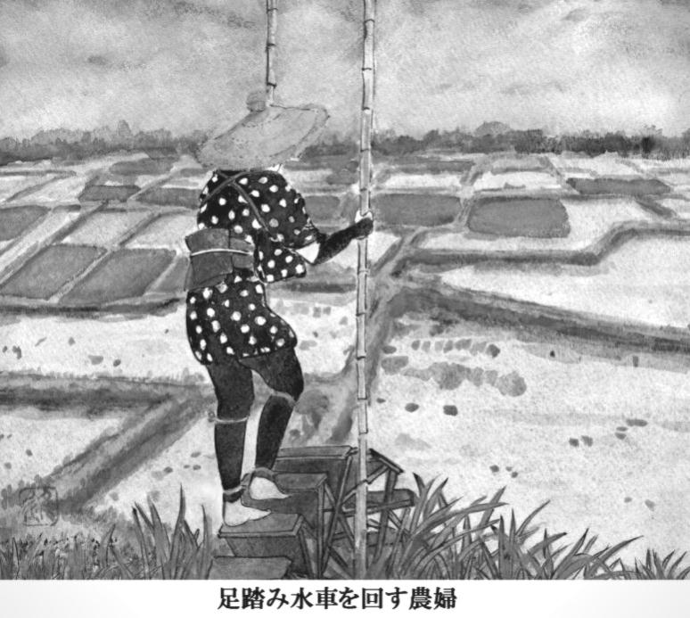
二、三日暖かい風が吹いた。よしきりが青い穂の中の、高い立ち枯れの穂先にとまって、せいいっぱい口を開いて、ギョギョと鳴いていた。その枯穂の向うに湖が見えて、波が白々と輝いていた。
夕方になると、蛙がケロケロと鳴いた。父親の升吉は、毎晩酒を飲んで帰って来た。そして、蛙がうるさいと言って、蒲団をかぶってすぐに寝てしまった。万吉のあとに来た春代という女が、夜になると決って三味線をひいた。文吉の三味線を教わる音が、ペンペンと頼りなく聞えた。
「蚊帳を買わないとね」
うめはある晩、蒲団にもぐりながら、思い出したように言った。小名木川にいた頃、蚊帳はちゃんとこしらえてあったのだけれども、こっちへ来る前に売ってしまった。
頭を動かすと、枕の中で切りワラがパリパリと音を立てた。波が船底を通り過ぎるのがはっきりと分った。蛙の声と蚊の羽音と三味線の音が、いつまでも耳についた。
「まだ眠れないのか」
うめが言った。
「うん」
りつ子は、くるりと寝返りを打った。うめは、それきり何も言わなかった。蛙がいつまでもやかましく鳴いた。りつ子はその夜、文吉といっしょに、どこかの座敷で三味線をひいている夢を見た。
六月の十日になって、升吉は久蔵のところをやめさせられた。
「いつまでもよそ者にまかせておくわけにはいかねえってんだ。それで、親類の者で柏崎で漁をやってる五助という男を頼むことにしたんだ。......ひと月の給金を三十五円くれたよ」
升吉は存外平気な顔をしていた。その翌日、升吉はいつもの通り朝飯を食べ、弁当を腰に下げて出て行った。
「どこへ行ったの」
りつ子が聞くと、桂庵の長太郎の話では房中の徳右衛門という家で大徳をやっていて、その持船が五艘もあり、網船に乗る男を探しているのだという。
「大徳網を曳くと、一網で何百貫も魚が入って、わかさぎなんぞいくらでも網の引き子にくれるんだそうだから、話がうまくまとまってくれると、ほんとにいいんだがね」
うめは心配そうな顔で長い間念仏をあげ、それから狭い船の中をあっちこち片付けたりした。高瀬船が入る日だったので、りつ子は、うめといっしょに綿引さんに行った。江口屋の前に周吉が立っていた。
「今日は手間取りか」
周吉は言った。
「うん」
「久蔵んとこ、やめたんだってな」
「......」
「大徳はいくらでも手がいっから、仕事はあっぺよ。それに長太郎さんの口ききだもの、あてがなくて連れてぐわけはねえもの。心配すっことはあんめえ」
「大徳って、そんなに人手がいるの？」
「いるなんてもんじゃねえ。二、三十人はいっぺよ」
周吉は番頭に呼ばれて、店の奥へ走って行った。りつ子は母親の背中を追いながら、サクサクと足の下で鳴る砂の音を耳底に感じた。長太郎の赤い目が砂の上にちらちらと見えるような気がした。
長太郎は偉そうに肩を張って、背中をかすかにゆすりながら、すいすい歩いて行くのだった。父親の升吉がその後ろをついていった。升吉の股引が妙にみすぼらしくて、急ぎ足で歩いているのに、長太郎になかなか追いつけないのだった。砂が草履の下でサクリサクリと鳴っていた。
「オーイ、りつ子ォ」
誰かが呼ぶのが聞えた。ふとわれに返ると、お芳が綿引さんの前に停っている馬車の横で、こっちを見て右手を上げていた。お芳の頬は、六月だというのに、やっぱり真っ赤で、まるで金時のようだった。
「ちょっと先に行っていろ」
うめは言って、観音様の山の方へ急いで上って行った。子どもの声がして、塗師やのじいさんが大声でどなる声がした。
りつ子は立ち止って、草履を脱いだ。頭の上を二枚羽根の飛行機が、大きな音をたてて飛んでいった。
馬掛やの中をちょっとのぞくと、春代が薬の行商人と卓をはさんで話していた。土間の向うの裏庭では、文吉が洗濯物を干していた。文吉の頭のずっと向こうに、漁船が幾艘も浮んでいた。
「りつ子ォ、早く来ォてば」
お芳がまた大声で呼んだ。水が初夏の陽にぎらぎらと反射して、目をあいていると痛いほどだった。青い波が白や銀や青い色に染まって、りつ子の胸の中にも、水の色がしみ込んで来るようだった。
沖の方で汽笛が響いた。三又沖を通運丸が黒い牛みたいに進んでいた。大きな袋を桟橋に置いて、さっきの行商人が煙草をのんでいた。一間ばかり離れたところに、春代がぼんやり立っていた。その後ろ姿が青い水に浮き立って、まるで切り抜きの絵のようだった。
ギョシギョシギョシ......、よしきりが下の葦原で鳴き交していた。それがどういうわけか、今日ばかりは〝さあ切れ、さあ切れ、さあさあ切れ切れ〟という風に聞えるのだった。風が吹いて、よしきりのとまっている青い穂が弓なりに曲った。よしきりは風に吹かれながら、鋭い声で鳴き続けていた。
りつ子は、お芳と並んで薪を束ねた。松脂の香りのする薪が、荒縄の中で小さい悲鳴に似た軋み声をあげた。
「おめえも大分うまくなっただなあ」
「そうかなあ」
「手つきがいくなっただよ。あと一年もやれば、おらとおんなしぐれえうまくなっと」
お芳の額に、つぶつぶの汗が浮んでいた。りつ子は、頸のまわりの汗を手の甲で拭った。葦の穂の茂った桟橋の向うに、小さい漁船がごだを曳いているのが、光る湖の中に黒々と見えた。
漁師は裸の上体を少しかがめて、くるくると神楽を巻いていた。くるくるくるとしゅろ縄を巻くたびに、船はわずかずつ移動して、青い波の色と船の黒さが、ほんのちょっとずつ変るのだった。
「弥一郎だね」
「そうかもしんね」
「そのうち、夜、カンテラをつけて、しら魚とりに連れてってくれるって言ってたよ」
「んだら、早く乗っけてもらえ。来月は祝言だもの、嫁さんもらったれば、他人なんぞはあ、決して乗っけてくれねえど」
お芳は笑った。りつ子は黙って薪を次々と束ねた。汗が松の皮にぽたりと落ちて、皮の割れ目に吸い込まれた。
中村製糸の昼の鐘が鳴った。飴売りの行商人が、街道を太鼓を叩きながら、くたびれた足取りで通って行った。
「うまく話がいくのかなあ」
りつ子は言った。
「うまくいがねえでどうすんだよ。心配したってしゃああんめ」
お芳は、ぐいぐいと薪を束ねた。りつ子がいくら急いでも、お芳はやっぱり、二倍ぐらいの速さで、きゅっきゅっと縄を巻いていくのだった。薪の山の彼方に、崎浜の青い水が見えた。波が光って、頭の中がしんと音がするようだった。
ひとひとひと、ふたふたふた、みよみよみよ......。
りつ子の耳の底に、升量りの声が聞えた。目を上げると、お芳が積み上げた薪束の数を、声を出して数えているのだった。
十一、十二、十三......。
高い空に、観音様の松が、大きな腕を広げていた。その枝は日の光に輝いて、まるで水の中の網のように、なにものかを捕えようとして、青い空の中に溶け込んでいるのだった。
志戸崎の浜は、もうすぐ夏だった。漁具の香りと干魚の匂いが、暖かい風に乗って、街道や砂の上を、ゆるやかに流れていた。
りつ子はお芳の横で、せっせと薪を束ねた。お芳の横にいると、その力に気押されるようで、体を動かさないではいられないのだった。汗がぽたぽたと流れた。
馬車曳きが眠そうな目で、石の上に腰を下ろしていた。振り返ると、湖にはもう弥一郎の船は見えなかった。湖が強い陽に光って、桟橋の向うに、遠い浮島が、ぼうっと青く霞んでいた。
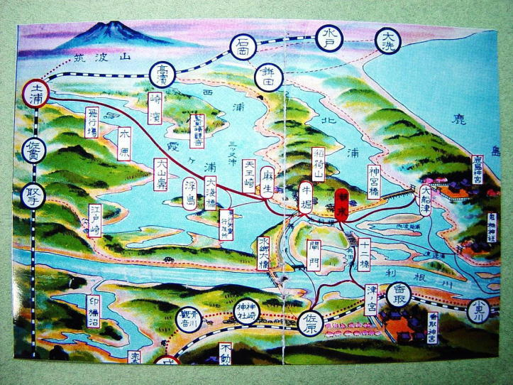
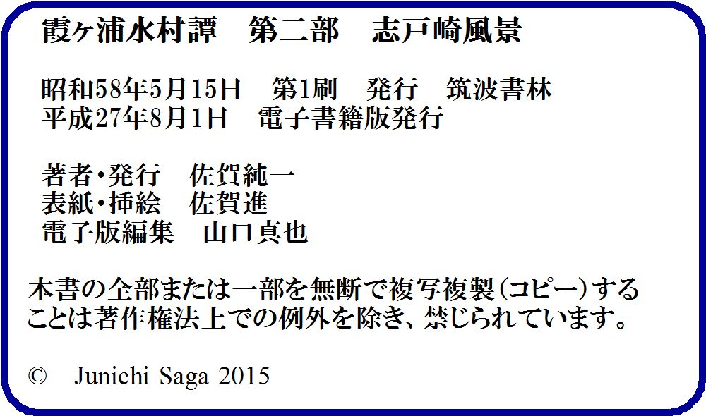